<!doctype html>
<html lang="en">
<head>
  <meta charset="utf-8">
  <meta name="viewport" content="width=device-width, initial-scale=1">
  <title>arxiv digest — 2026-09-11</title>
  <style>
:root {
  --bg: #ffffff;
  --fg: #1f2328;
  --muted: #59636e;
  --border: #d0d7de;
  --card: #f6f8fa;
  --link: #0969da;
}
body {
  max-width: 980px;
  margin: 0 auto;
  padding: 2rem 1rem 5rem;
  font-family: -apple-system, BlinkMacSystemFont, "Segoe UI", Helvetica, Arial, sans-serif;
  line-height: 1.55;
  color: var(--fg);
  background: var(--bg);
}
a { color: var(--link); }
img { max-width: 100%; height: auto; }
pre, code { background: var(--card); border-radius: 6px; }
pre { padding: 1rem; overflow-x: auto; }
blockquote { border-left: 4px solid var(--border); padding-left: 1rem; color: var(--muted); }
details { margin: 0.6rem 0; }
summary { cursor: pointer; font-weight: 600; }
.paper-figures-scroll {
  display: flex;
  gap: 1rem;
  overflow-x: auto;
  overscroll-behavior-x: contain;
  padding: 0.75rem 0.25rem 1rem;
  margin: 1rem 0 1.25rem;
  border-top: 1px solid var(--border);
  border-bottom: 1px solid var(--border);
  scroll-snap-type: x proximity;
}
.paper-figure-card {
  flex: 0 0 min(260px, 72vw);
  scroll-snap-align: start;
  background: var(--card);
  border: 1px solid var(--border);
  border-radius: 12px;
  padding: 0.55rem;
}
.paper-figure-card img {
  display: block;
  width: 100%;
  max-height: 240px;
  object-fit: contain;
  background: white;
  border-radius: 8px;
}
.paper-figure-caption {
  display: block;
  margin-top: 0.5rem;
  color: var(--muted);
  font-size: 0.85rem;
}
.figure-strip-hint {
  color: var(--muted);
  font-size: 0.9rem;
  margin-bottom: -0.3rem;
}
</style>
  <!-- MathJax: renders $...$ inline math and $$...$$ display math, plus
       \(...\) and \[...\]. Loaded from the official CDN; works offline
       once cached. Configured to skip code/pre blocks so arxiv IDs that
       look like dollar amounts don't get mangled. -->
  <script>
    window.MathJax = {
      tex: {
        inlineMath: [['$', '$'], ['\\(', '\\)']],
        displayMath: [['$$', '$$'], ['\\[', '\\]']],
        processEscapes: true,
        processEnvironments: true
      },
      options: {
        skipHtmlTags: ['script', 'noscript', 'style', 'textarea', 'pre', 'code'],
        ignoreHtmlClass: 'tex2jax_ignore',
        processHtmlClass: 'tex2jax_process'
      }
    };
  </script>
  <script id="MathJax-script" async
    src="https://cdn.jsdelivr.net/npm/mathjax@3/es5/tex-chtml.js"></script>
</head>
<body>
<header style="background-color: #333; color: white; padding: 15px; margin-bottom: 20px;">
  <h1 style="margin: 0; font-size: 24px;">
    <a href="https://ochelpan.github.io/arXiv_clean/" style="color: white; text-decoration: none;">Main</a>
  </h1>
</header>

<h1>Daily arXiv Report</h1>

<hr>
<p>
<a href="index.html">← Index</a>
 · <a href="papers_05.html">← Previous</a> · <a href="papers_07.html">Next →</a>
</p>
<hr>

<h2>Papers 101–120</h2>
<p><a id="paper-2609.10081"></a></p>
<h3 id="observation-of-magnetic-anisotropy-crossover-and-high-temperature-skyrmions-in-the-dirac-magnet-fe3ge-with-a-distorted-kagome-lattice"><a href="http://arxiv.org/abs/2609.10081v1">Observation of Magnetic-Anisotropy Crossover and High-Temperature Skyrmions in the Dirac Magnet Fe3Ge with a Distorted Kagome Lattice</a></h3>
<p><strong>Authors:</strong> Yalei Huang, Xiaowei Lv, Bin Li, Chunqiang Xu, Dhanarajagopal Alltrin, Xiaoxuan Ma, Wanting Yang, Wei Zhou, Xiangzhuo Xing, Wen-Chin Lin, Raman Sankar, Michael Smidman, Shixun Cao, Dong Qian, Renchao Che, Xiaofeng Xu<br>
<strong>Type:</strong> both · <strong>Category:</strong> strongly correlated electrons · <strong>PDF:</strong> <a href="https://arxiv.org/pdf/2609.10081v1">https://arxiv.org/pdf/2609.10081v1</a><br>
<strong>Analysis basis:</strong> full PDF text, analyzed in chunks
<strong>Topic relevance:</strong> <code>analog quantum simulation</code> <strong>1/5</strong></p>
<div class="figure-strip-hint">↔ Scroll figures horizontally</div>
<div class="paper-figures-scroll">
<figure class="paper-figure-card">

<figcaption class="paper-figure-caption"><b>Fig 1.</b> Figure 1. Crystal structures and characterizations of Fe3Ge. a Crystallographic unit cell of Fe3Ge. Fe and Ge</figcaption>
</figure>
<figure class="paper-figure-card">
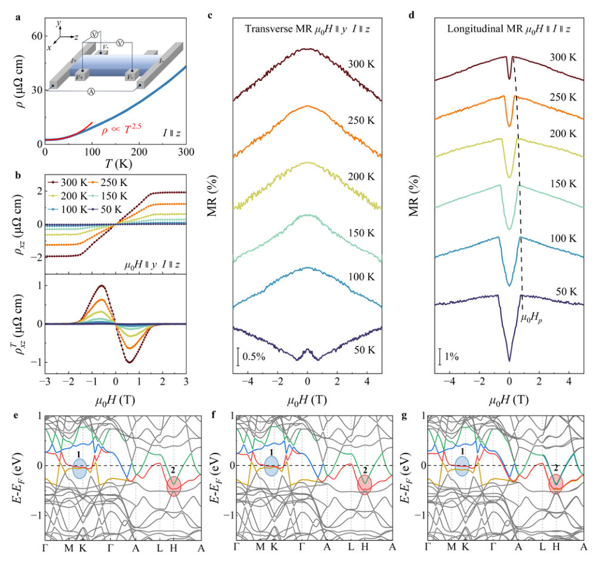
<figcaption class="paper-figure-caption"><b>Fig 2.</b> Figure 2. Magneto-transport measurements and band structures of Fe3Ge single crystals. a Temperature-</figcaption>
</figure>
<figure class="paper-figure-card">
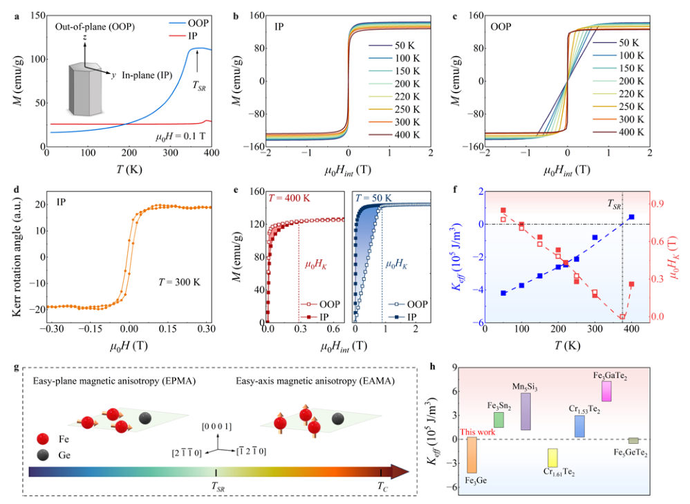
<figcaption class="paper-figure-caption"><b>Fig 3.</b> Figure 3. Magnetic properties of Fe3Ge single crystals. a Temperature-dependent magnetization under an applied</figcaption>
</figure>
<figure class="paper-figure-card">

<figcaption class="paper-figure-caption"><b>Fig 4.</b> Figure 4. Spin textures of Fe3Ge single crystals. a-d LTEM images (top row) and the corresponding magnetic</figcaption>
</figure>
<figure class="paper-figure-card">

<figcaption class="paper-figure-caption"><b>Fig 5.</b> Figure 5. Magnetic phase diagram. a Magnetic phase diagram of Fe3Ge sketching the evolution of spin textures as</figcaption>
</figure>
</div>

<p><strong>Summary.</strong> This work reports on the discovery of robust, high-temperature skyrmions in the Dirac magnet Fe3Ge. The material exhibits a unique combination of a high Curie temperature, large intrinsic anomalous Hall effect, and a temperature-dependent magnetic anisotropy crossover. By combining advanced transport measurements with LTEM, the authors establish Fe3Ge as a leading candidate for high-temperature spintronics.</p>
<p><strong>Why it may be interesting.</strong> The combination of high operating temperature, topological electronic effects (AHE), and stable magnetic textures (skyrmions) in a single material system is highly relevant for designing next-generation spintronic devices, which often involves complex many-body interactions.</p>
<details>
<summary>Detailed structure</summary>
<p><strong>Main problem.</strong> The study aims to observe and understand the coexistence of robust, high-temperature skyrmions and nontrivial electronic band structures in a magnetic material.</p>
<p><strong>Main result.</strong> The Dirac magnet Fe3Ge was shown to host stable skyrmions up to a high Curie temperature (~650 K) while simultaneously exhibiting a large intrinsic anomalous Hall conductivity, making it a promising spintronic platform.</p>
<p><strong>Method.</strong> The research combines experimental measurements (magnetotransport, LTEM, magnetization) with theoretical calculations (FPLAPW, tight-binding models) to characterize the magnetic and electronic properties.</p>
<p><strong>Model / system.</strong> The physical system is the Dirac magnet Fe3Ge, which possesses a distorted Kagome lattice structure. The analysis covers its magnetic anisotropy crossover (easy-plane to easy-axis) and its topological electronic band structure.</p>
<p><strong>Key observables.</strong> High Curie temperature (~650 K), large intrinsic anomalous Hall conductivity (~380 Ω-1cm-1), spin reorientation transition (~375 K), and visualization of mesoscopic skyrmions via LTEM.</p>
<p><strong>Important parameters / regimes.</strong> Temperature (especially the transition points 375 K and 650 K), magnetic field strength, and the material's lattice structure (distorted Kagome).</p>
<p><strong>Assumptions / limitations.</strong> The analysis assumes that the observed AHE is intrinsic, linked to Berry curvature, and that the observed skyrmion stability window is robust across the measured temperature range.</p>
<p><strong>Figures summary.</strong> Figures detail structural characterizations (EDX, STEM), transport measurements ($
ho-T$, Hall resistivity), magnetic hysteresis loops, and LTEM images showing the evolution of magnetic textures like vortices and skyrmions across different temperatures.</p>
<p><strong>Paper structure.</strong> The paper systematically presents structural confirmation, followed by transport measurements revealing topological effects and anisotropy changes. It then uses LTEM and theoretical modeling to visualize and confirm the existence and stability of skyrmion phases across the temperature-dependent magnetic anisotropy crossover.</p>
</details>
<details>
<summary>Abstract</summary>
<p>Topological materials that simultaneously host robust high-temperature skyrmions and nontrivial electronic band structures have attracted tremendous interest owing to their distinctive advantages for both fundamental research and prospective technological applications. Here, we report the observation of robust skyrmions in the Dirac kagome magnet Fe3Ge, which exhibits a high Curie temperature of ~ 650 K. At room temperature, Fe3Ge shows a large intrinsic anomalous Hall conductivity of ~ 380 Ω-1cm-1, originating from its nontrivial electronic band topology. Systematic magnetization measurements reveal a spin reorientation transition at ~ 375 K, indicating a crossover from easy-plane to easy-axis magnetic anisotropy. Below the spin reorientation temperature, a large topological Hall effect is observed, arising from microscopic noncoplanar spin structures. Lorentz transmission electron microscopy shows that mesoscopic skyrmions are stabilized in the easy-axis magnetic anisotropy regime and persist over an exceptionally wide temperature window of 375-650 K, far exceeding that of most previously reported skyrmion-hosting materials. These results establish Fe3Ge as a promising platform for exploring diverse topological properties, with strong potential for advancing future high-temperature spintronic applications, ranging from next-generation information storage to logic computing devices.</p>
</details>
<p><sub><a href="#top">↑ back to top</a></sub></p>

<p><a id="paper-2609.10034"></a></p>
<h3 id="one-relative-phase-orders-operational-thresholds-of-noisy-bell-pairs"><a href="http://arxiv.org/abs/2609.10034v1">One Relative Phase Orders Operational Thresholds of Noisy Bell Pairs</a></h3>
<p><strong>Authors:</strong> Xuan Du Trinh<br>
<strong>Type:</strong> theory · <strong>Category:</strong> quantum information and computing · <strong>PDF:</strong> <a href="https://arxiv.org/pdf/2609.10034v1">https://arxiv.org/pdf/2609.10034v1</a><br>
<strong>Analysis basis:</strong> full PDF text, analyzed in chunks
<strong>Topic relevance:</strong> <code>correlated / nonlocal dissipation</code> <strong>1/5</strong></p>
<div class="figure-strip-hint">↔ Scroll figures horizontally</div>
<div class="paper-figures-scroll">
<figure class="paper-figure-card">
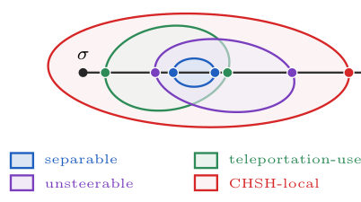
<figcaption class="paper-figure-caption"><b>Fig 1.</b> FIG. 1. Schematic cross-section of ability-absence sets for two-qubit states. CHSH-local means that the CHSH value, optimized over local measurement settings, does not exceed the local bound 2. Separable states lie in every depicted set. The teleportation-useless and unsteerable sets lie inside the CHSH-local set [5, 20]. The teleportation-useless and unsteer- able sets overlap without either containing the other [4]. The segment is the Bell-mixing line of Eq. (1) from Φ+ at λ = 1 to σ at λ = 0, and each colored point marks an edge of the cor- responding ability-absence interval. The figure illustrates an example in which σ is steerable and teleportation-useful but CHSH-local. Thus, the...</figcaption>
</figure>
<figure class="paper-figure-card">

<figcaption class="paper-figure-caption"><b>Fig 2.</b> FIG. 2. The operational thresholds are nondecreasing in the relative coherence phase θ. Analytic curves give the entangle- ment and coincident teleportation usefulness thresholds, the three-setting CJWR witness threshold, the CHSH-nonlocal threshold, and the threshold for a positive key rate in one-way BB84 with CSS codes. The last three are each optimized over the local measurements. At λ = 1</figcaption>
</figure>
</div>

<p><strong>Summary.</strong> This work develops theoretical tools to precisely determine the operational thresholds for quantum abilities in noisy Bell pairs. It establishes that these thresholds are governed by the relative phase between the noise and coherence terms, proving a general monotonicity law. This provides a powerful, general method for certifying quantum capabilities even when exact analytical criteria are unknown.</p>
<p><strong>Why it may be interesting.</strong> The rigorous mathematical framework developed for analyzing thresholds based on phase dependence and convexity is highly relevant for understanding noise resilience in quantum communication protocols.</p>
<details>
<summary>Detailed structure</summary>
<p><strong>Main problem.</strong> The paper determines the operational thresholds at which quantum communication abilities (like entanglement or steerability) are lost or regained in noisy Bell pairs.</p>
<p><strong>Main result.</strong> It proves a monotonicity law showing that the operational threshold is nondecreasing with the relative phase between the noise and Bell coherences, even when a closed-form criterion is unavailable.</p>
<p><strong>Method.</strong> The analysis uses the X-part approximation of the noise state and relies on the convexity and local-unitary closure of the ability-absence set to establish bounds and monotonicity theorems.</p>
<p><strong>Model / system.</strong> The system is modeled by noisy Bell pairs represented by a Bell mixture $
ho_\lambda(\sigma) = \lambda\Phi_+ + (1 - \lambda)\sigma$, where $\sigma$ is the noise state.</p>
<p><strong>Key observables.</strong> Operational thresholds ($\lambda_K$), the relative phase ($    heta$), and the critical radius ($R$) for steerability.</p>
<p><strong>Important parameters / regimes.</strong> Bell weight ($\lambda$), relative phase ($    heta$), and the seven Pauli expectation values defining the X-part of the noise.</p>
<p><strong>Assumptions / limitations.</strong> The analysis assumes the ability-absence set $K$ is convex and closed under local unitaries, and it often relies on approximating the noise state by its X-part ($\sigma_X$).</p>
<p><strong>Figures summary.</strong> Figures illustrate the loss/recovery of various quantum abilities along the Bell-mixing line, showing distinct thresholds, and demonstrate that these thresholds are nondecreasing functions of the relative phase $   heta$.</p>
<p><strong>Paper structure.</strong> The paper progresses by first establishing the X-part approximation for bounding the threshold, then proving the general monotonicity law concerning the relative phase $  heta$, and finally applying this framework to specific abilities like steerability using geometric constraints.</p>
</details>
<details>
<summary>Abstract</summary>
<p>Unlike the two-qubit entangled and CHSH-nonlocal sets, the steerable and Bell-nonlocal ones have no known general closed-form criterion. For any such operational ability whose failing states form a convex set closed under local unitaries, and for a Bell mixture with arbitrary noise, the $X$ part of the noise gives an upper bound on the definitive threshold, the Bell weight above which the mixture attains the ability. That bound is the tightest that the seven of the fifteen Pauli expectation values fixing the $X$ part can support. The same theorem shows that a state has the ability whenever its $X$ part does, so partial tomography of a state can certify its ability. When noise is of $X$ form, the mixture carries a relative phase between the noise and Bell coherences that cannot be gauged away by local unitaries, and it controls the threshold through interference. We prove a monotonicity law: the threshold is nondecreasing in this phase, whether or not a closed-form criterion for the ability exists.</p>
</details>
<p><sub><a href="#top">↑ back to top</a></sub></p>

<p><a id="paper-2609.09613"></a></p>
<h3 id="probing-quantum-chaos-near-a-wormhole-throat-with-a-circular-string"><a href="http://arxiv.org/abs/2609.09613v1">Probing quantum chaos near a wormhole throat with a circular string</a></h3>
<p><strong>Authors:</strong> Ai-chen Li, Xin-Fei Li, Xuanting Ji<br>
<strong>Type:</strong> theory · <strong>Category:</strong> other · <strong>PDF:</strong> <a href="https://arxiv.org/pdf/2609.09613v1">https://arxiv.org/pdf/2609.09613v1</a><br>
<strong>Analysis basis:</strong> full PDF text, analyzed in chunks
<strong>Topic relevance:</strong> <code>Keldysh / 2PI / non-Gaussian methods</code> <strong>1/5</strong></p>
<div class="figure-strip-hint">↔ Scroll figures horizontally</div>
<div class="paper-figures-scroll">
<figure class="paper-figure-card">

<figcaption class="paper-figure-caption"><b>Fig 1.</b> Figure 1: Effective frequency profiles and the corresponding mode-function response for the Ellis-Bronnikov wormhole. The upper panels show the time dependence of ω(R) n (τ)2</figcaption>
</figure>
<figure class="paper-figure-card">
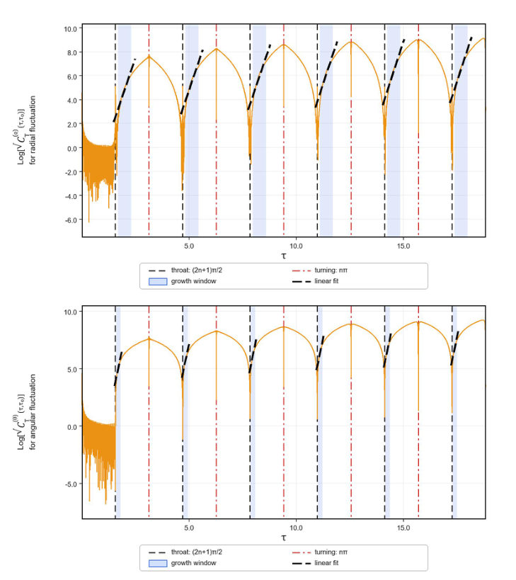
<figcaption class="paper-figure-caption"><b>Fig 2.</b> Figure 2: Representative OTOC amplitudes for the Ellis-Bronnikov wormhole, computed from (3.36) and (3.37). The numerical parameters are the same as those used in Fig. 1. The shaded intervals indicate the growth windows used to fit the logarithm of the unequal-time commutator, and the short black dashed segments show the corresponding linear fits. The black vertical dashed lines mark the world-sheet times τthroat = (2k + 1)π/2 at which the probe string reaches the wormhole throat, whereas the red vertical dash-dotted lines mark the times τturning = kπ at which its radial velocity vanishes at the distant turning points, with k ∈Z.</figcaption>
</figure>
<figure class="paper-figure-card">
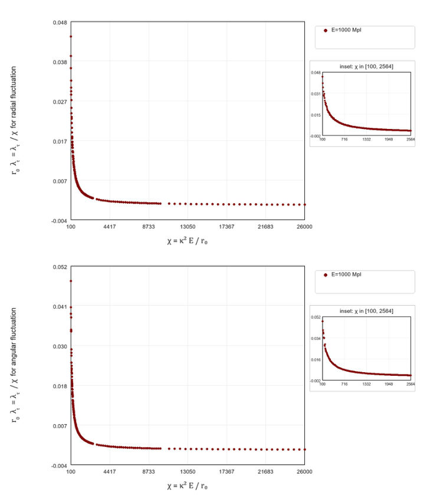
<figcaption class="paper-figure-caption"><b>Fig 3.</b> Figure 3: Dimensionless physical-time Lyapunov rate r0λt as a function of the throat parameter χ = κ2E/r0 for the Ellis-Bronnikov wormhole. The upper and lower panels show the radial and angular fluctuation channels, respectively. For each value of χ, the OTOC amplitude is evolved as in Fig. 2, and the world-sheet Lyapunov exponent λτ is extracted from the first growth window associated with the initial passage through the throat. Since t = κ2Eτ + t0, the Lyapunov exponent defined with respect to the physical time is λt = λτ/(κ2E). In natural units λt has dimensions of inverse time, or equivalently energy, so multiplication by r0 gives the dimensionless combination r0λt = λτ/χ. This...</figcaption>
</figure>
<figure class="paper-figure-card">
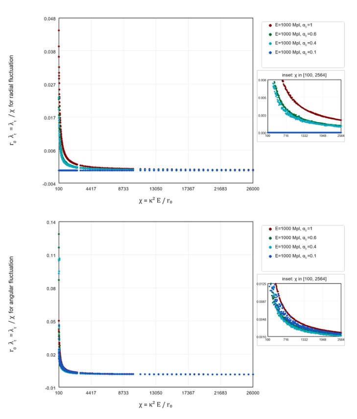
<figcaption class="paper-figure-caption"><b>Fig 4.</b> Figure 4: Dimensionless physical-time Lyapunov rate r0λt as a function of χ = κ2E/r0 for the global-monopole wormhole. The upper and lower panels show the radial and an- gular fluctuation channels, respectively, while the different curves display the effect of the topological defect through representative values of α0 = p</figcaption>
</figure>
<figure class="paper-figure-card">

<figcaption class="paper-figure-caption"><b>Fig 5.</b> Figure 5: Dependence of the time-dependent effective frequency profiles on the deficit factor α0 for the global-monopole wormhole. The upper and lower panels show ω(R) n (τ)2/χ2</figcaption>
</figure>
</div>

<p><strong>Summary.</strong> This paper examines quantum chaos near traversable wormhole throats by analyzing the OTOC growth of quantum fluctuations of a probe string. Using a quadratic approximation of the world-sheet action, the authors find evidence of finite-time exponential growth in the OTOCs for both polarizations. This work establishes a transferable, non-holographic diagnostic tool for probing quantum dynamics in regular, curved spacetimes.</p>
<p><strong>Why it may be interesting.</strong> The methodology—applying OTOC diagnostics to a regular, horizonless geometry—provides a non-holographic, transferable framework for studying quantum chaos in curved spacetimes, which is highly relevant for theoretical work on quantum gravity and spacetime dynamics.</p>
<details>
<summary>Detailed structure</summary>
<p><strong>Main problem.</strong> The study investigates whether quantum fluctuations of a circular probe string develop a quantum-chaotic response while traversing a wormhole throat, even when the classical radial motion is stable.</p>
<p><strong>Main result.</strong> Both the Ellis–Bronnikov and global-monopole wormholes show finite intervals of exponential Out-of-Time-Ordered Correlator (OTOC) growth associated with the first throat passage. This indicates local dynamical sensitivity distinct from asymptotic chaos.</p>
<p><strong>Method.</strong> The authors canonically quantize the transverse fluctuation modes by expanding the world-sheet action to quadratic order and constructing OTOC amplitudes from unequal-time commutators.</p>
<p><strong>Model / system.</strong> The system involves a circular probe string embedded in curved spacetimes, specifically analyzing the Ellis–Bronnikov and global-monopole wormhole geometries. The analysis uses the Polyakov action and focuses on the quadratic fluctuations around a stable classical trajectory.</p>
<p><strong>Key observables.</strong> Out-of-Time-Ordered Correlator (OTOC) amplitudes and the corresponding dimensionless rate of exponential growth.</p>
<p><strong>Important parameters / regimes.</strong> Probe energy relative to the throat scale, and the solid-angle deficit ($\Delta$) in the global-monopole extension.</p>
<p><strong>Assumptions / limitations.</strong> The analysis is restricted to the quadratic approximation of the world-sheet action and the circular background ansatz, meaning the results characterize the Gaussian fluctuation sector.</p>
<p><strong>Figures summary.</strong> Figures illustrate the effective frequency profiles distinguishing polarizations, showing finite intervals of exponential OTOC growth at the throat, and summarizing the dependence of the dimensionless physical-time rates on the solid-angle deficit.</p>
<p><strong>Paper structure.</strong> The paper establishes the physical problem by contrasting the regular classical motion with the potential for quantum chaos. It details the mathematical framework by quantizing the transverse fluctuations via the quadratic action, calculates the OTOCs, and presents results for specific wormhole models, concluding with a discussion of the physical interpretation and limitations.</p>
</details>
<details>
<summary>Abstract</summary>
<p>We investigate whether quantum fluctuations of a circular probe string develop a quantum-chaotic response while traversing a wormhole throat. The classical circular-string embedding is periodic and radially stable, but its two physical transverse polarizations experience time-dependent tidal potentials. Expanding the world-sheet action to quadratic order, we canonically quantize these modes and construct out-of-time-ordered correlator(OTOC) amplitudes from their unequal-time commutators. For the Ellis--Bronnikov wormhole, both polarizations exhibit finite intervals of approximately exponential OTOC growth associated with the first throat passage. The corresponding dimensionless rate measured with respect to physical time is positive over the parameter range studied and generally decreases as the probe energy is increased relative to the throat scale. In the global-monopole extension, increasing the solid-angle deficit narrows the band of locally amplifiable modes and suppresses the extracted rates; a sufficiently strong defect can nearly quench the radial signal, while the angular channel retains a polarization-dependent non-monotonic structure when the energy-to-throat-scale ratio is small. These quantities characterize finite-time dynamical sensitivity in the Gaussian fluctuation sector and should not be identified with asymptotic many-body chaos or a thermodynamic phase transition. Although the numerical analysis uses two representative wormhole geometries, the construction depends only on covariant world-sheet fluctuations and real-time commutators. It therefore provides a transferable, non-holographic framework for applying quantum-chaos diagnostics directly to quantum probes in curved spacetimes.</p>
</details>
<p><sub><a href="#top">↑ back to top</a></sub></p>

<p><a id="paper-2609.10391"></a></p>
<h3 id="the-arithmetic-of-spectra-factorization-statistics-and-symmetric-functions"><a href="http://arxiv.org/abs/2609.10391v1">The Arithmetic of Spectra: Factorization, Statistics, and Symmetric Functions</a></h3>
<p><strong>Authors:</strong> A. Chaudhary<br>
<strong>Type:</strong> theory · <strong>Category:</strong> statistical mechanics · <strong>PDF:</strong> <a href="https://arxiv.org/pdf/2609.10391v1">https://arxiv.org/pdf/2609.10391v1</a><br>
<strong>Analysis basis:</strong> full PDF text, analyzed in chunks
<strong>Topic relevance:</strong> <code>analog quantum simulation</code> <strong>1/5</strong></p>
<div class="figure-strip-hint">↔ Scroll figures horizontally</div>
<div class="paper-figures-scroll">
<figure class="paper-figure-card">
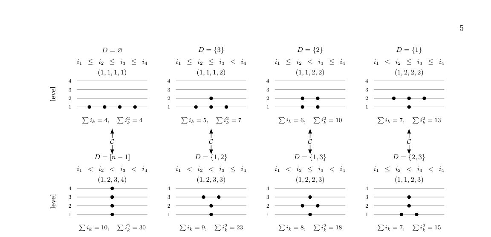
<figcaption class="paper-figure-caption"><b>Fig 1.</b> FIG. 1. The eight descent sets for n = 4, arranged in complementary pairs. Each panel shows the lowest-energy configuration compatible with its constraint set in (22), together with the total energies for a linear spectrum, P</figcaption>
</figure>
</div>

<p><strong>Summary.</strong> This paper develops a comprehensive mathematical framework to study how the factorization of a quantum system's single-particle spectrum determines its many-body statistics. By translating spectral properties into algebraic identities involving symmetric functions, it systematically relates bosonic and fermionic partition functions. The work is significant for providing a unified combinatorial calculus for quantum statistical mechanics.</p>
<p><strong>Why it may be interesting.</strong> This work provides a deep mathematical link between spectral theory, combinatorics (symmetric functions), and fundamental quantum statistics, which is highly relevant for understanding correlation functions in many-body quantum systems.</p>
<details>
<summary>Detailed structure</summary>
<p><strong>Main problem.</strong> The paper studies the arithmetic structure of spectra, focusing on how factorizations of the single-particle spectrum dictate the resulting many-particle statistics (Bose-Einstein vs. Fermi-Dirac). It aims to provide a unified combinatorial framework for calculating canonical partition functions.</p>
<p><strong>Main result.</strong> The bosonic and fermionic statistics are systematically related through spectral factorization identities, which can be mapped onto combinatorial structures like descent sets or occupation matrices. The framework successfully relates product spectra to specific algebraic structures governing the partition functions.</p>
<p><strong>Method.</strong> The methodology involves representing the spectrum via a formal alphabet and utilizing spectral factorization, connecting tensor factorizations to multiplicative factorizations. Advanced tools include symmetric functions, $\lambda$-rings, and the RSK correspondence to translate spectral properties into combinatorial identities.</p>
<p><strong>Model / system.</strong> The analysis is applied to non-interacting quantum systems, generalizing from the imaginary-time propagator ($e^{-eta H_1}$) to an arbitrary trace-class one-particle kernel. Concrete examples include the harmonic trap and the rectangular infinite well, where the spectrum is separable into multiple sectors.</p>
<p><strong>Key observables.</strong> Canonical partition functions ($Z_{n,B}, Z_{n,F}$), the spectral alphabet $X$, and cumulants ($\kappa_j$).</p>
<p><strong>Important parameters / regimes.</strong> Temperature ($eta$), dimension ($d$), and the structure of the underlying one-particle kernel $K$.</p>
<p><strong>Assumptions / limitations.</strong> The analysis assumes the underlying physical structure can be described by spectral alphabets and their arithmetic operations, though limitations exist regarding the natural infinite spectrum.</p>
<p><strong>Figures summary.</strong> The notes detail mathematical relationships (Equations 13, 15, 18, 20, 21) showing how additive and product spectra lead to specific forms for bosonic and fermionic partition functions, and how these relate to combinatorial objects like descent sets.</p>
<p><strong>Paper structure.</strong> The paper progresses by first establishing the general framework using spectral alphabets and factorizations for non-interacting systems. It then details the relationship between bosonic and fermionic statistics using symmetric functions and combinatorial tools (like descent sets). Finally, it applies this to specific physical models, such as the harmonic trap, to derive concrete results regarding symmetry and dimensionality.</p>
</details>
<details>
<summary>Abstract</summary>
<p>We study factorizations of the single-particle spectrum of non-interacting quantum systems and their consequences for many-particle statistics. Representing the single-particle partition function by a spectral alphabet, tensor factorizations become multiplicative factorizations of the alphabet, which can be lifted to canonical Bose and Fermi partition functions using standard symmetric-function and $λ$-ring identities. We show how product spectra arise from different factorizations, how antisymmetrization can be assigned across an odd number of factors, and which tensor factorizations are compatible with a fixed spectrum. The paper therefore studies spectral factorization and provides a consolidated combinatorial framework for canonical Bose and Fermi partition functions.</p>
</details>
<p><sub><a href="#top">↑ back to top</a></sub></p>

<p><a id="paper-2609.09269"></a></p>
<h3 id="the-geometry-of-transport-in-quantum-walks-and-parrondos-paradox"><a href="http://arxiv.org/abs/2609.09269v1">The Geometry of Transport in Quantum Walks and Parrondo's Paradox</a></h3>
<p><strong>Authors:</strong> Jose Alfredo de Leon, Mariana Pérez-Muralles, Jan Neuser, Carlos Pineda<br>
<strong>Type:</strong> theory · <strong>Category:</strong> statistical mechanics · <strong>PDF:</strong> <a href="https://arxiv.org/pdf/2609.09269v1">https://arxiv.org/pdf/2609.09269v1</a><br>
<strong>Analysis basis:</strong> full PDF text, analyzed in chunks
<strong>Topic relevance:</strong> <code>analog quantum simulation</code> <strong>1/5</strong></p>
<div class="figure-strip-hint">↔ Scroll figures horizontally</div>
<div class="paper-figures-scroll">
<figure class="paper-figure-card">

<figcaption class="paper-figure-caption"><b>Fig 1.</b> Figure 1. (a) Bloch sphere for a Hadamard DTQW, divided by great circle (dashed) into winning (blue, W) and losing (red, L) hemispheres of initial states ⃗r0, based on the sign of the asymptotic velocity v = ⃗T · ⃗r0; the arrow marks the transport vector ⃗T . (b) Mean position ⟨x⟩versus time t for three representative initial states, one selected from the win- ning hemisphere, the losing hemisphere, and the null equator in (a): |+⟩(blue), |+y⟩(black), and |−⟩(red), respectively. Solid lines denote the asymptotic prediction vt.</figcaption>
</figure>
<figure class="paper-figure-card">

<figcaption class="paper-figure-caption"><b>Fig 2.</b> Figure 3. (a) Outcome map on the Bloch sphere of initial states ⃗r0 for U1, U2 randomly chosen, and their three-step al- ternation U2U2U1. The zero-drift great circles v = ⃗T (U)·⃗r0 = 0 partition the Bloch sphere into winning and losing initial states for U1 (dashed), U2 (dash-dotted), and U2U2U1 (solid). Solid and stippled regions indicate intuitive and paradoxical outcomes, respectively, following the colouring of the inset in Fig. 2. In particular, the stippled red region corresponds to L ◦L = W. (b) Mean position for an initial state in this region: U1 and U2 are losing (open red markers), whereas the minimal three-step alternation U2U2U1 is winning (open blue diamonds).</figcaption>
</figure>
<figure class="paper-figure-card">

<figcaption class="paper-figure-caption"><b>Fig 3.</b> Figure 2. DTQWs with initial coin state |c0⟩= (|0⟩+ eiπ/4 |1⟩)/ √</figcaption>
</figure>
<figure class="paper-figure-card">

<figcaption class="paper-figure-caption"><b>Fig 4.</b> Figure 4. (a) Pointed convex cone K = cone{⃗T1, ⃗T2} generated by the individual transport vectors ⃗Ti = ⃗T (Ui), with U1 and U2 the same operators as in Fig. 3. The transport vector ⃗T4 = ⃗T (U2U1) lies inside K, collinear with ⃗T1, whereas ⃗T3 = ⃗T (U2U2U1) lies outside. (b) The same cone embedded in the Bloch sphere. A plane through the origin separates ⃗T3 from K; it is viewed edge-on and therefore appears as a black line. Its normal ˆn defines an initial-state direction for which ⃗T3 · ˆn has the opposite sign to ⃗Ti · ˆn for every i.</figcaption>
</figure>
</div>

<p><strong>Summary.</strong> This work applies the concept of Parrondo's paradox to quantum walks, reformulating the problem as a geometric condition on the transport vector. It shows that the paradox arises when the combined transport vector lies outside the cone spanned by the individual strategies. This provides a powerful, general criterion for understanding how quantum interference can lead to counter-intuitive macroscopic behavior.</p>
<p><strong>Why it may be interesting.</strong> The connection between quantum walk transport geometry and classical paradoxes provides a novel, physically measurable diagnostic tool for analyzing non-trivial quantum dynamics, relevant to open quantum systems.</p>
<details>
<summary>Detailed structure</summary>
<p><strong>Main problem.</strong> The paper investigates Parrondo's paradox—where combining losing strategies yields a winning one—within the framework of quantum transport.</p>
<p><strong>Main result.</strong> The paradox is recast as a geometric condition: it occurs if and only if the composite transport vector falls outside the convex cone spanned by the individual strategy vectors.</p>
<p><strong>Method.</strong> The analysis uses the transport vector, derived from the coin's steady state in discrete-time quantum walks, to establish a geometric criterion for the paradox.</p>
<p><strong>Model / system.</strong> The model is a 1D discrete-time quantum walk (DTQW) governed by a unitary step operator $U=SC$, analyzed using Bloch sphere representations for initial states and transport vectors.</p>
<p><strong>Key observables.</strong> Asymptotic velocity ($v$), Transport Vector ($\vec{T}$), Stationary Bloch vector ($\vec{r}_{	ext{stat}}$), and the probability of paradoxical outcomes.</p>
<p><strong>Important parameters / regimes.</strong> The initial coin state ($\vec{r}_0$), the structure of the combined operators (composition vs. alternation), and the critical rotation angle ($\chi_c$).</p>
<p><strong>Assumptions / limitations.</strong> The analysis focuses on the long-time, asymptotic limit of the quantum walk dynamics, and certain calculations assume Haar-distributed independence of coin operators.</p>
<p><strong>Figures summary.</strong> Figures illustrate the Bloch sphere being divided into winning/losing hemispheres based on the sign of the asymptotic velocity, and show the mean position $\langle x 
angle$ vs. time $t$ for different initial states.</p>
<p><strong>Paper structure.</strong> The paper progresses by defining the transport vector, establishing its geometric interpretation, comparing the conditions for paradox in coin composition versus simple alternation, and finally calculating the joint probabilities of outcomes.</p>
</details>
<details>
<summary>Abstract</summary>
<p>We study Parrondo's paradox -- the phenomenon where combining losing strategies yields a winning one -- in a minimal discrete-time quantum walk. We introduce the transport vector, encoded in the coin's steady state, whose inner product with the initial coin state gives the walker's asymptotic velocity. More generally, the paradox emerges exactly when the transport vector of the combined strategy falls outside the cone spanned by the individual ones -- a geometric criterion valid for any combination of strategies. It explains, for instance, why composing two coin operators within a single step can produce the paradox while simple alternation between them cannot, since alternation keeps the combined vector confined to the cone. The paradoxical set has nonzero measure, and we compute its probability explicitly in representative cases. This casts the paradox as one instance of designing reachable transport in quantum walks.</p>
</details>
<p><sub><a href="#top">↑ back to top</a></sub></p>

<p><a id="paper-2609.10162"></a></p>
<h3 id="unbounded-degree-overhead-for-alice-conditioned-quantum-bell-certificates"><a href="http://arxiv.org/abs/2609.10162v1">Unbounded degree overhead for Alice-conditioned quantum Bell certificates</a></h3>
<p><strong>Authors:</strong> Fumin Wang<br>
<strong>Type:</strong> theory · <strong>Category:</strong> quantum information and computing · <strong>PDF:</strong> <a href="https://arxiv.org/pdf/2609.10162v1">https://arxiv.org/pdf/2609.10162v1</a><br>
<strong>Analysis basis:</strong> full PDF text, analyzed in chunks
<strong>Topic relevance:</strong> <code>quantum measurements</code> <strong>1/5</strong></p>
<div class="figure-strip-hint">↔ Scroll figures horizontally</div>
<div class="paper-figures-scroll">
<figure class="paper-figure-card">

<figcaption class="paper-figure-caption"><b>Fig 1.</b> FIG. 1. Unbounded cost of restricting certificate structure. The purple staircase is the proved lower bound dos ≥k + 1 whenever 0 &lt; ϵ &lt; tk. It bounds the exact conditioned degree. Orange points show numerical saturation within 10−6, a distinct finite-tolerance quantity; they do not certify exact closure. Standard degree remains two. The green segment marks the separately proved interval where conditioned degree is exactly three. Both axes are logarithmic. The SM reports solver residuals and the sensitivity of the numerical points.</figcaption>
</figure>
<figure class="paper-figure-card">
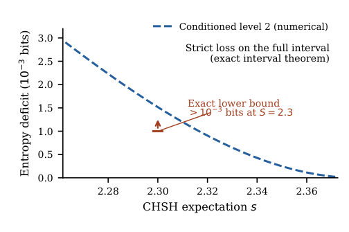
<figcaption class="paper-figure-caption"><b>Fig 2.</b> FIG. 2. Deficit in the conditional min-entropy certified by Alice-conditioned level two: log2[Gos 2 (s)/GQ(s)]. Strict positiv- ity throughout the displayed interval follows from Theorem 3; the dashed curve is numerical. The arrow at s = 2.3 marks the exact lower bound 10−3 bits, not the optimum of the relaxation. Standard level two and conditioned level three certify the exact quantum tradeoff throughout this interval.</figcaption>
</figure>
<figure class="paper-figure-card">

<figcaption class="paper-figure-caption"><b>Fig 3.</b> Figure 1: The level-one filtration obstruction (Remark 2.6). Left: the standard level-one moment body contains moments of total degree at most two. Right: an Alice-conditioned level-one block Γa|x, indexed by Bob words of length at most one, contains the corner moments φa|x(PB,0PB,1) — total degree three once the Alice label is counted — which the standard level-one body cannot supply.</figcaption>
</figure>
<figure class="paper-figure-card">

<figcaption class="paper-figure-caption"><b>Fig 4.</b> Figure 2: Level-one separation of tilted CHSH (Theorems 3.4 and 3.7). The standard level-one value is exactly 2 √</figcaption>
</figure>
<figure class="paper-figure-card">
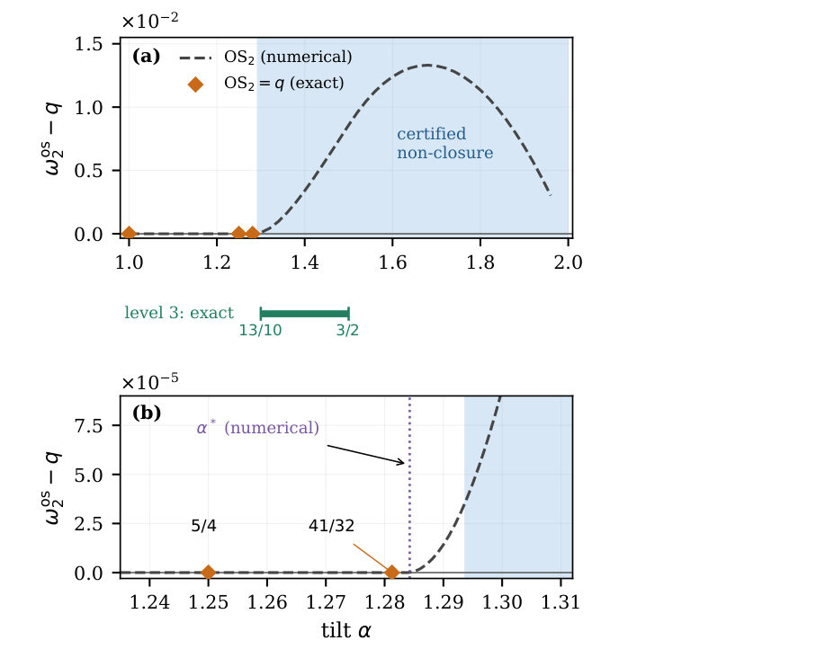
<figcaption class="paper-figure-caption"><b>Fig 5.</b> Figure 3: Exact quantum-bound certification. Orange diamonds are exact level-two closure points. The separate green strip marks an interval of exact level-three closure; it is not plotted on the level-two gap axis. The blue open interval shows the finite witness fan at level two; section 8 additionally extends non-closure to every α ∈(α−, 2). Dashed curves and the candidate boundary near 1.28427 are numerical; the existence of a unique transition is not proved.</figcaption>
</figure>
</div>

<p><strong>Summary.</strong> This paper rigorously analyzes the resource cost of certifying quantum Bell inequalities when measurements are conditioned on one party's outcomes. It proves that this conditioning imposes an unbounded overhead in the required algebraic degree compared to standard certification methods. The work significantly separates the complexity of standard quantum bounds from those requiring single-question structure.</p>
<p><strong>Why it may be interesting.</strong> It provides deep theoretical insights into the limitations of polynomial methods (like SOS/NPA) to capture the full complexity of quantum correlations, which is fundamental to quantum information theory.</p>
<details>
<summary>Detailed structure</summary>
<p><strong>Main problem.</strong> The paper investigates the resource overhead required to certify quantum Bell inequalities when conditioning the test on one party's measurements (Alice-conditioned certificates). It aims to compare this overhead against standard certification methods.</p>
<p><strong>Main result.</strong> The required certification degree for Alice-conditioned certificates grows unboundedly as the Bell test approaches certain endpoints, demonstrating a separation between the resources needed for standard versus conditioned certification.</p>
<p><strong>Method.</strong> The authors use the framework of the NPA hierarchy, formulating the problem as a Sum-of-Squares (SOS) decomposition problem, and employ techniques like Fejér-weighted traces and Gram matrix analysis.</p>
<p><strong>Model / system.</strong> The study focuses on quantum Bell inequalities, specifically using the CHSH scenario, and analyzing the required levels of the NPA hierarchy to certify quantum correlations.</p>
<p><strong>Key observables.</strong> The primary observables are the minimum required certificate levels ($d_{std}$ vs. $d_{os}$) and the resulting bounds on the CHSH expectation value ($s$).</p>
<p><strong>Important parameters / regimes.</strong> The parameter $\alpha$ controls the specific Bell test instance, and the analysis examines behavior near endpoint tilts ($\epsilon 	o 0$).</p>
<p><strong>Assumptions / limitations.</strong> The analysis relies on the assumption that the optimal certificate lies on the boundary of the PSD cone, and it distinguishes between numerical saturation fits and true exact upper bounds.</p>
<p><strong>Figures summary.</strong> Figures illustrate the divergence of the required conditioned degree (purple staircase) from the standard, fixed degree line as the test parameter approaches an endpoint.</p>
<p><strong>Paper structure.</strong> The paper develops results by first establishing the unbounded overhead for conditioned certificates (Theorem 1), then characterizing finite exactness intervals (Theorem 2), and finally providing rigorous, solver-free verification of these optimal bounds.</p>
</details>
<details>
<summary>Abstract</summary>
<p>Requiring each sum-of-squares term to involve only one of Alice's measurement questions can impose an unbounded certification cost. In the simplest Bell scenario, we prove that no finite level of the Alice-conditioned NPA hierarchy contains all standard level-two Bell certificates. An explicit family of truncated positive functionals on the infinite dihedral group exceeds the tilted-CHSH quantum bound at every prescribed finite level, while a standard degree-two certificate is exact. A Fejer-weighted trace reduces positivity to a rank-one subtraction from a moving-average Gram matrix. The required conditioned level grows at least as $(2-α)^{-1/2}$ near the endpoint tilt. This bounds the degree of exact nice-SOS inputs to compiled-game soundness proofs. Consequently, no finite conditioned level certifies the entire optimal CHSH randomness tradeoff against quantum side information, although standard level two does. Away from the endpoint, we prove a sharp one-level cost throughout $α\in[13/10,3/2]$, using optimal-strategy kernels and exact Bernstein matrix positivity to certify a continuous interval. The results separate ordinary SOS degree from the resources keyed by single-question certificate structure.</p>
</details>
<p><sub><a href="#top">↑ back to top</a></sub></p>

<p><a id="paper-2609.09680"></a></p>
<h3 id="wasserstein-stability-couplings-across-volumes-and-the-math929math-moment-thresholds-in-the-edwards-anderson-model"><a href="http://arxiv.org/abs/2609.09680v1">Wasserstein Stability, Couplings Across Volumes, and the $1+1/d$ Moment Thresholds in the Edwards--Anderson Model</a></h3>
<p><strong>Authors:</strong> Mauris Chueng, Hexiang Wang, Keheng Zhu<br>
<strong>Type:</strong> theory · <strong>Category:</strong> disordered systems and neural networks · <strong>PDF:</strong> <a href="https://arxiv.org/pdf/2609.09680v1">https://arxiv.org/pdf/2609.09680v1</a><br>
<strong>Analysis basis:</strong> full PDF text, analyzed in chunks
<strong>Topic relevance:</strong> <code>analog quantum simulation</code> <strong>1/5</strong></p>
<div class="figure-strip-hint">↔ Scroll figures horizontally</div>
<div class="paper-figures-scroll">
<figure class="paper-figure-card">
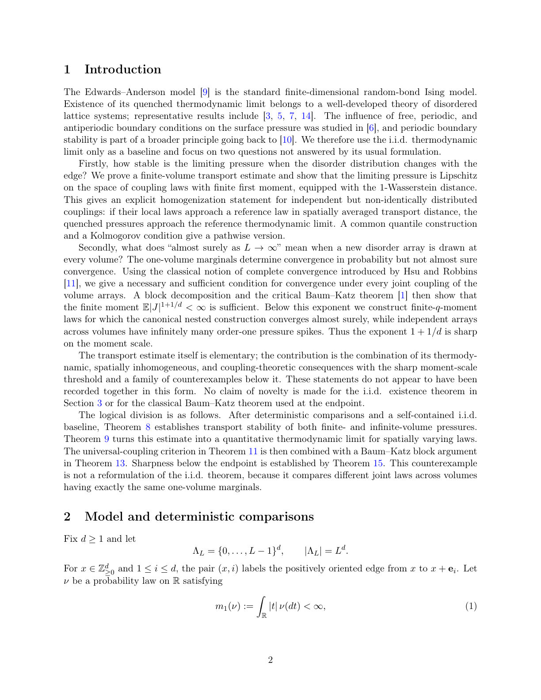
<figcaption class="paper-figure-caption"><b>Fig 1.</b> Low-resolution page preview, page 2</figcaption>
</figure>
<figure class="paper-figure-card">

<figcaption class="paper-figure-caption"><b>Fig 2.</b> Low-resolution page preview, page 3</figcaption>
</figure>
<figure class="paper-figure-card">
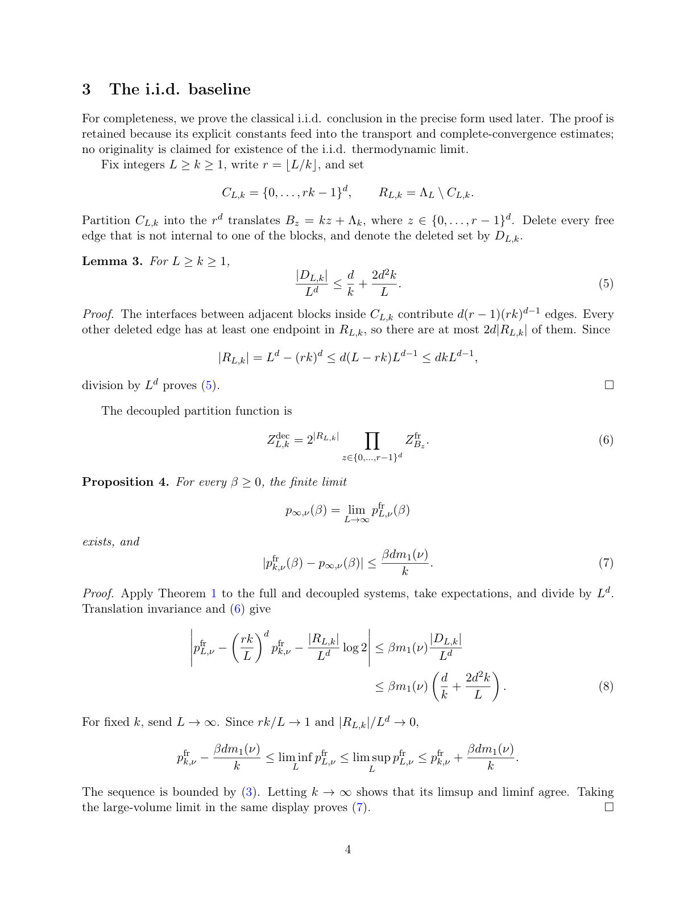
<figcaption class="paper-figure-caption"><b>Fig 3.</b> Low-resolution page preview, page 4</figcaption>
</figure>
<figure class="paper-figure-card">

<figcaption class="paper-figure-caption"><b>Fig 4.</b> Low-resolution page preview, page 5</figcaption>
</figure>
<figure class="paper-figure-card">
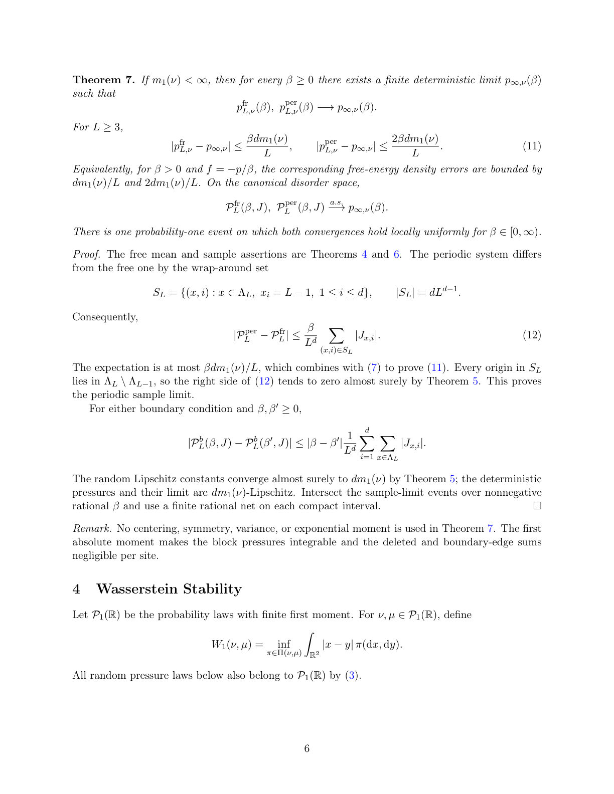
<figcaption class="paper-figure-caption"><b>Fig 5.</b> Low-resolution page preview, page 6</figcaption>
</figure>
</div>

<p><strong>Summary.</strong> This paper rigorously analyzes the thermodynamic limit of the Edwards-Anderson Ising model under random disorder. It proves that the convergence of the system's pressure to a stable infinite-volume limit depends critically on the disorder couplings having a finite moment of order $1+1/d$. This threshold exponent is shown to be sharp, providing deep mathematical insight into the role of disorder fluctuations.</p>
<p><strong>Why it may be interesting.</strong> While focused on classical statistical mechanics, the rigorous mathematical tools developed—especially the analysis of convergence thresholds based on moment conditions and coupling stability—are highly relevant to understanding critical phenomena in complex, disordered quantum systems.</p>
<details>
<summary>Detailed structure</summary>
<p><strong>Main problem.</strong> The paper investigates the stability and convergence of the quenched pressure in the Edwards-Anderson Ising model when the disorder couplings are spatially inhomogeneous.</p>
<p><strong>Main result.</strong> It establishes that the existence of a universal-coupling limit for the pressure requires the disorder couplings to satisfy the moment condition $\mathbb{E}|J|^{1+1/d} < \infty$, and this exponent is proven to be optimal.</p>
<p><strong>Method.</strong> The analysis combines concepts from probability theory, specifically using the 1-Wasserstein distance to quantify stability, and employing strong limit theorems (like Borel-Cantelli) to relate convergence in probability to almost sure convergence.</p>
<p><strong>Model / system.</strong> The system is the nearest-neighbor Edwards-Anderson Ising model, characterized by random couplings $J_{x,i}$ on a lattice $\Lambda_L$. The study focuses on the quenched pressure, defined as the normalized logarithm of the partition function, $p^L(eta, J)$.</p>
<p><strong>Key observables.</strong> The quenched pressure, $p_b^L(eta, J)$, and its convergence properties under different boundary conditions (free vs. periodic).</p>
<p><strong>Important parameters / regimes.</strong> The spatial dimension $d$, the inverse temperature $eta$, and the critical moment exponent $1+1/d$.</p>
<p><strong>Assumptions / limitations.</strong> The disorder $\{J_{x,i}\}$ is assumed to be i.i.d. initially, but the core results extend to spatially inhomogeneous disorder, requiring analysis via joint couplings across volumes.</p>
<p><strong>Paper structure.</strong> The paper first establishes basic convergence results using the 1-Wasserstein distance for the free/periodic pressures. It then develops the universal-coupling criterion, culminating in the proof that the $1+1/d$ moment condition is necessary and sufficient for this strong convergence property.</p>
</details>
<details>
<summary>Abstract</summary>
<p>We study the quenched pressure of the nearest-neighbor Edwards--Anderson Ising model with free and periodic boundary conditions. First, we prove that the infinite-volume pressure is $βd$-Lipschitz in the coupling law for the $1$-Wasserstein distance, yielding quantitative thermodynamic limits for spatially inhomogeneous disorder. Second, for periodic volumes, we prove that almost-sure convergence under every joint coupling of the finite-volume disorder arrays is equivalent to complete convergence of the one-volume pressure laws. Third, we prove that $\mathbb{E}\vert{}J\vert{}^{1+1/d}<\infty$ guarantees this universal-coupling conclusion. We further show that this exponent is optimal among uniform power-moment assumptions: for every $1\leq q<1+1/d$, there is a centered symmetric law with finite $q$-th moment for which canonical nested volumes converge almost surely, whereas independently resampled volumes with the same fixed-volume marginals converge in probability but not almost surely. Finally, in dimension one, we prove that the first-moment condition is also necessary for a finite limiting pressure.</p>
</details>
<p><sub><a href="#top">↑ back to top</a></sub></p>

<p><a id="paper-2609.09850"></a></p>
<h3 id="when-does-a-quantum-speedup-survive-end-to-end"><a href="http://arxiv.org/abs/2609.09850v1">When Does a Quantum Speedup Survive End-to-End?</a></h3>
<p><strong>Authors:</strong> Pablo Herrero Gómez, Antonio Jimeno Morenilla, David Muñoz Hernández, Higinio Mora Mora<br>
<strong>Type:</strong> theory · <strong>Category:</strong> quantum information and computing · <strong>PDF:</strong> <a href="https://arxiv.org/pdf/2609.09850v1">https://arxiv.org/pdf/2609.09850v1</a><br>
<strong>Analysis basis:</strong> full PDF text, analyzed in chunks
<strong>Topic relevance:</strong> <code>quantum measurements</code> <strong>1/5</strong></p>
<div class="figure-strip-hint">↔ Scroll figures horizontally</div>
<div class="paper-figures-scroll">
<figure class="paper-figure-card">
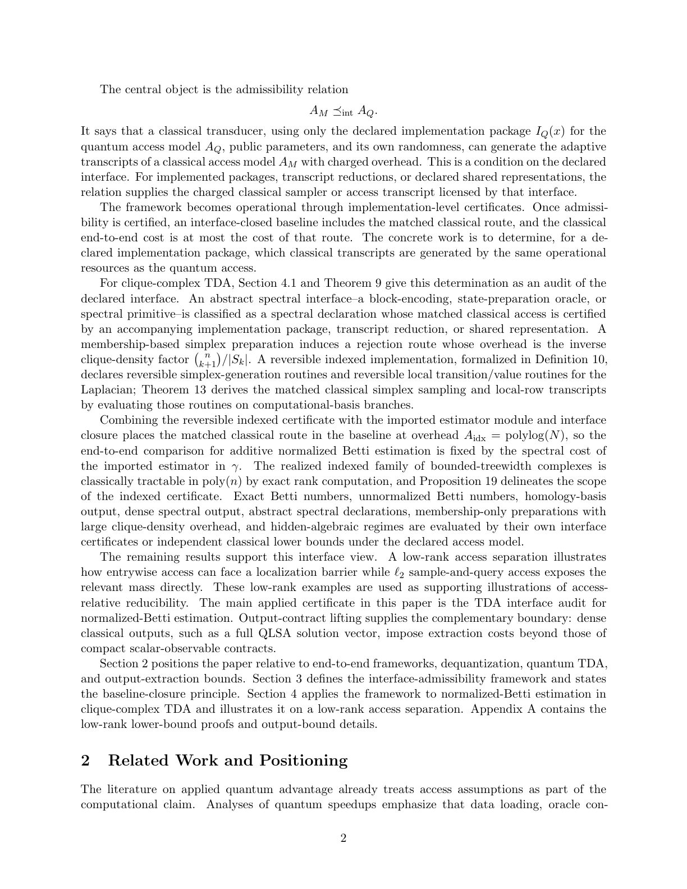
<figcaption class="paper-figure-caption"><b>Fig 1.</b> Low-resolution page preview, page 2</figcaption>
</figure>
<figure class="paper-figure-card">
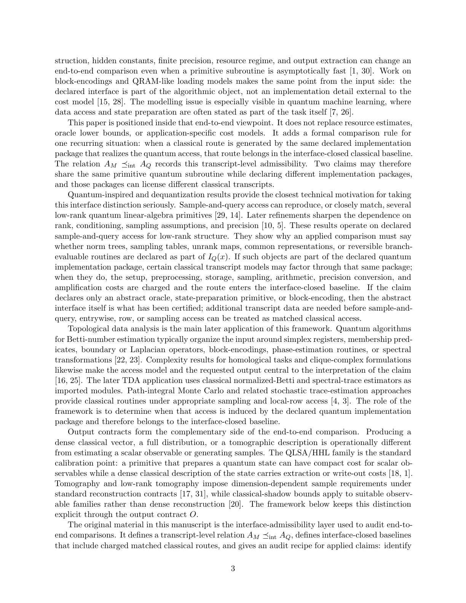
<figcaption class="paper-figure-caption"><b>Fig 2.</b> Low-resolution page preview, page 3</figcaption>
</figure>
<figure class="paper-figure-card">
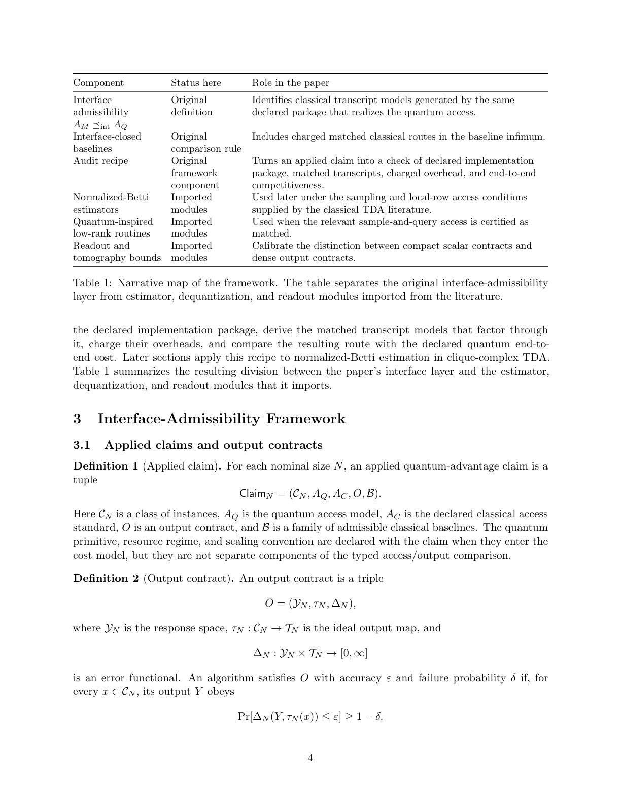
<figcaption class="paper-figure-caption"><b>Fig 3.</b> Low-resolution page preview, page 4</figcaption>
</figure>
<figure class="paper-figure-card">
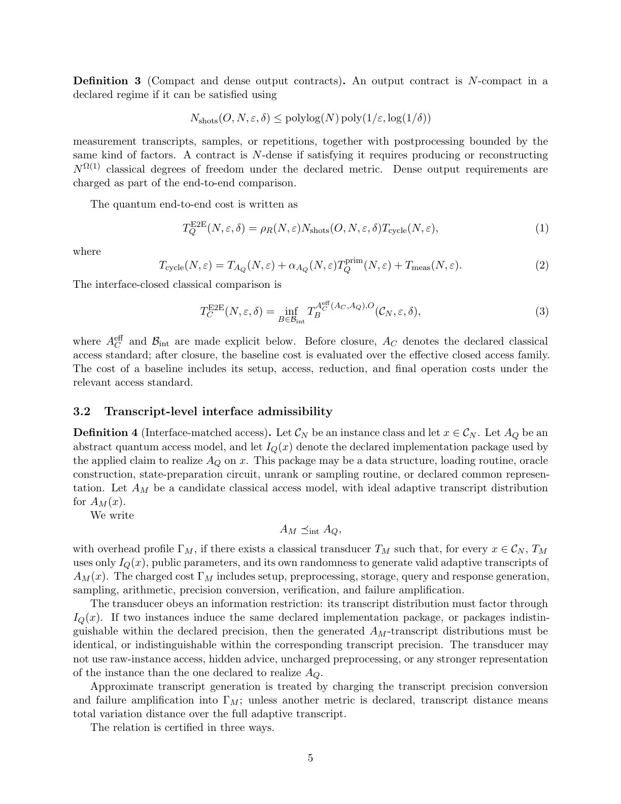
<figcaption class="paper-figure-caption"><b>Fig 4.</b> Low-resolution page preview, page 5</figcaption>
</figure>
<figure class="paper-figure-card">
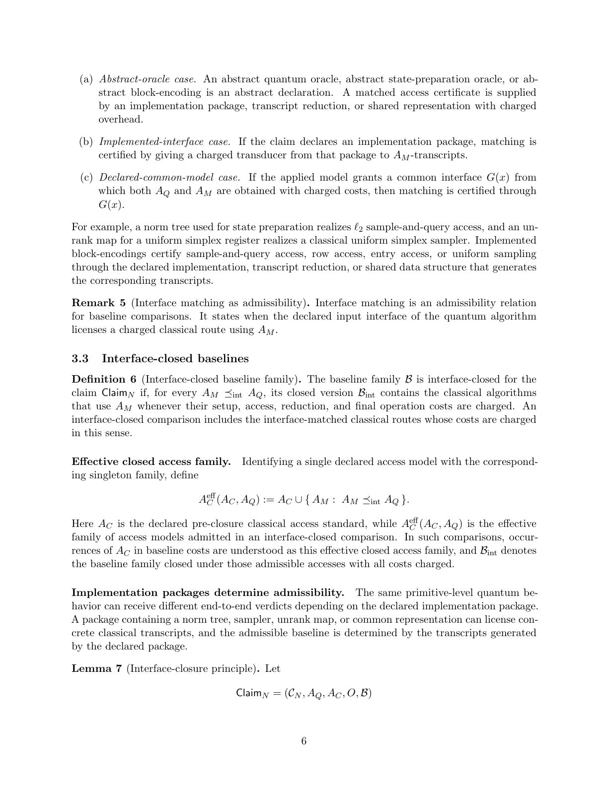
<figcaption class="paper-figure-caption"><b>Fig 5.</b> Low-resolution page preview, page 6</figcaption>
</figure>
</div>

<p><strong>Summary.</strong> This paper develops a formal 'interface-admissibility' framework to audit quantum speedup claims by rigorously comparing quantum and classical end-to-end costs. It shows that the advantage is highly context-dependent, requiring that the classical overheads associated with the quantum interface be fully accounted for. This provides a necessary theoretical tool for assessing the practical viability of quantum algorithms in fields like TDA.</p>
<p><strong>Why it may be interesting.</strong> It provides a rigorous, formal framework for quantum algorithm assessment, moving beyond simple gate counts to account for the entire computational stack, which is crucial for practical quantum advantage claims.</p>
<details>
<summary>Detailed structure</summary>
<p><strong>Main problem.</strong> The paper addresses the fundamental question of when a quantum computational speedup remains valid when considering the entire end-to-end process, as such speedups are found to be highly dependent on the specific quantum interface used.</p>
<p><strong>Main result.</strong> The end-to-end cost is fixed by the spectral dependence of the imported estimator on the gap $\gamma$ under the established interface-closed baseline, suggesting that classical tractability can be recovered under specific certification conditions.</p>
<p><strong>Method.</strong> It introduces an 'admissibility relation' $ ext{AM} \preceq_{   ext{int}}   ext{AQ}$ to audit quantum claims by determining which classical access transcripts can be generated using the same declared quantum implementation package, thereby charging all associated overheads.</p>
<p><strong>Model / system.</strong> The framework is applied to operational audits for normalized-Betti estimation in clique-complex Topological Data Analysis (TDA), analyzing the costs associated with various quantum access models and output contracts.</p>
<p><strong>Key observables.</strong> End-to-end cost ($ ext{T}<em ext_int="ext{int">{    ext{E2E}}$), admissibility relation ($    ext{AM} \preceq</em>$), and the spectral dependence on the gap $\gamma$.}}   ext{AQ</p>
<p><strong>Important parameters / regimes.</strong> The structure of the input access, the output contract (e.g., compact vs. dense), and the overheads ($\Gamma_M$) associated with the implementation package.</p>
<p><strong>Assumptions / limitations.</strong> The speedup is conditional on the declared input access and output contract, and the comparison relies on the accurate certification of admissibility and the charging of all associated overheads.</p>
<p><strong>Figures summary.</strong> The notes reference tables summarizing the framework, mapping specific tasks (like TDA Betti) to their required contracts and evidence status, rather than describing visual figures.</p>
<p><strong>Paper structure.</strong> The paper establishes the interface-admissibility framework, applies it to TDA Betti estimation, and analyzes the cost implications based on the type of certified access (e.g., reversible indexed simplex interfaces).</p>
</details>
<details>
<summary>Abstract</summary>
<p>Primitive quantum speedups are interface-relative: they depend on the input access used to run the primitive and on the output contract used to consume its state or samples. This paper introduces a transcript-level admissibility relation \(A_M\preceq_{\mathrm{int}}A_Q\), defined relative to the declared implementation package of the quantum interface. It identifies which adaptive classical access transcripts that same package licenses, with all setup, transcript-generation, and precision overheads charged.   The main application is an operational audit for normalized-Betti estimation in clique-complex TDA, separating three declared-interface regimes. Reversible indexed simplex interfaces certify matched classical simplex sampling and local Laplacian row access by evaluating their reversible routines on single computational branches. Membership-based preparations induce a rejection route of overhead \(\binom{n}{k+1}/|S_k|\). Abstract spectral or block-encoding interfaces require an accompanying implementation package, transcript reduction, or shared representation. Under the indexed certificate and interface closure, the end-to-end cost is fixed by the imported estimator's spectral dependence on the gap \(γ\); the concretely realized bounded-treewidth family already admits exact \(\mathrm{poly}(n)\) classical Betti computation by rank over \(\mathbb{Q}\). A low-rank separation supports the role of access and output contracts.</p>
</details>
<p><sub><a href="#top">↑ back to top</a></sub></p>
<h2 id="other-papers-24">Other papers (24)</h2>
<p><em>Papers from primary archives without highlighted authors or any topic match. Click to expand.</em></p>
<details>
<summary>Show other papers</summary>

<p><a id="paper-2609.10056"></a></p>
<h3 id="accelerating-a-based-algorithms-for-decoding-quantum-low-density-parity-check-codes"><a href="http://arxiv.org/abs/2609.10056v1">Accelerating A*-Based Algorithms for Decoding Quantum Low-Density Parity-Check Codes</a></h3>
<p><strong>Authors:</strong> Lamia Yous, Francisco Garcia Herrero, Mark F. Flanagan<br>
<strong>Type:</strong> theory · <strong>Category:</strong> quantum information and computing · <strong>PDF:</strong> <a href="https://arxiv.org/pdf/2609.10056v1">https://arxiv.org/pdf/2609.10056v1</a><br>
<strong>Analysis basis:</strong> full PDF text, analyzed in chunks</p>
<div class="figure-strip-hint">↔ Scroll figures horizontally</div>
<div class="paper-figures-scroll">
<figure class="paper-figure-card">
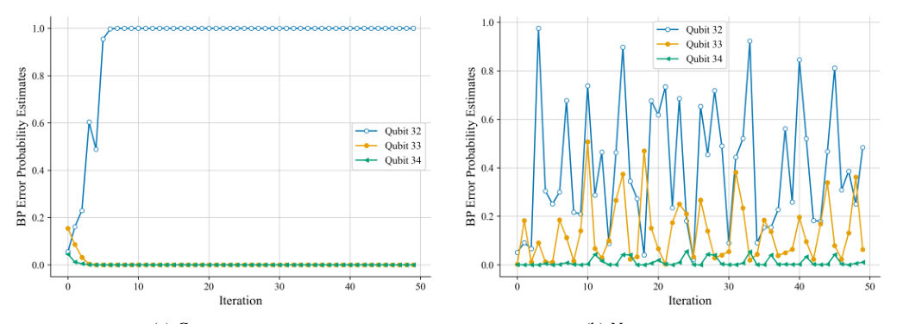
<figcaption class="paper-figure-caption"><b>Fig 1.</b> Fig. 1. Evolution of the estimated error probability from BP for a set of three sample qubits. The horizontal axis shows the BP iteration number, while the vertical axis shows the estimated probability of error. Each colored curve represents a different qubit in the Tanner graph. The curves are shown for qubits 32, 33 and 34 as these are representative of general qubit behavior.</figcaption>
</figure>
<figure class="paper-figure-card">
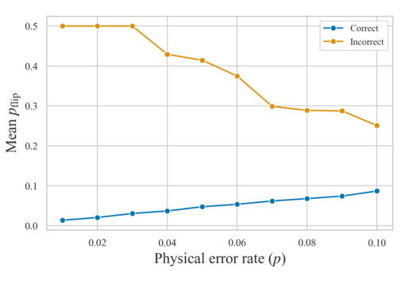
<figcaption class="paper-figure-caption"><b>Fig 2.</b> Fig. 2. Mean pflip values for correct and incorrect qubits versus physical error rate, p than transient fluctuations, which commonly occur in the early stages of BP decoding. As evidenced by the behavior of qubit 33 in Figure 1a, such early oscillations often stabilize as the decoder converges and should therefore not be penalized. The average step change is calculated as</figcaption>
</figure>
<figure class="paper-figure-card">
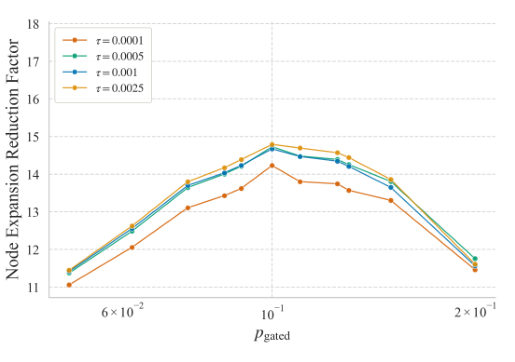
<figcaption class="paper-figure-caption"><b>Fig 3.</b> Fig. 3. Node expansion reduction factor versus pgated values for varying τ at a fixed physical error rate of p = 0.05. The node expansion reduction factor is defined as the ratio of the number of nodes expanded by the stand-alone Tesseract to those expanded by the BP-Tesseract hybrid decoder. is too high, too many qubits are not gated, which degrades the information given to Tesseract. If τ is too low, too many qubits are gated, reducing the amount of useful information available and thus increasing the number of node expansions. If pgated is too low, gated qubits are only slightly penalized, and their cost is not much higher than the reliable qubits, while if the value for pgated is too...</figcaption>
</figure>
<figure class="paper-figure-card">
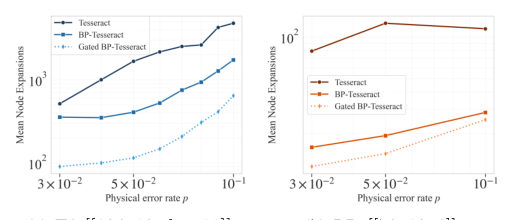
<figcaption class="paper-figure-caption"><b>Fig 4.</b> Fig. 4. Mean number of node expansions versus physical error rate for the stand-alone Tesseract decoder, the BP-Tesseract decoder, and the gated BP- Tesseract decoder.</figcaption>
</figure>
<figure class="paper-figure-card">
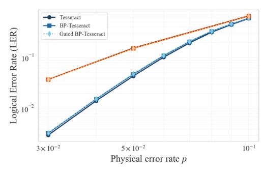
<figcaption class="paper-figure-caption"><b>Fig 5.</b> Fig. 5. LER performance versus physical error rate for the stand-alone Tesseract decoder, the BP-Tesseract decoder, and the gated BP-Tesseract decoder, for the T1 and BB codes. directly to Tesseract without any filtering is not optimal in non-convergent cases. While the reduction in node expansions is substantial, it is also important to assess the impact on the logical error rate (LER) performance. Figure 5 presents the LER results for all three decoders for the T1 and bicycle bivariate codes. In both cases, the LER for the proposed decoder is extremely close to that of the original Tesseract. These results indicate that the proposed decoder achieves an effective balance be- tween...</figcaption>
</figure>
</div>
<p><strong>Summary.</strong> This paper introduces a novel, hybrid decoding framework for QLDPC codes by combining the speed of Belief Propagation (BP) with the accuracy of the A*-based Tesseract decoder. A key component is a reliability-based gating mechanism that filters uncertain BP outputs, allowing Tesseract to focus only on the most challenging residual errors. This significantly reduces computational overhead while preserving high error correction performance.</p>
<p><strong>Why it may be interesting.</strong> The development of faster, more robust decoding algorithms is crucial for scaling up quantum computers, making this work highly relevant to the theoretical understanding of fault-tolerant quantum computation.</p>
<details>
<summary>Detailed structure</summary>
<p><strong>Main problem.</strong> The primary challenge is developing an efficient decoder for Quantum Low-Density Parity-Check (QLDPC) codes to enable reliable, large-scale quantum computation.</p>
<p><strong>Main result.</strong> The proposed hybrid BP-Tesseract decoding framework achieves substantial reductions in decoding complexity (up to 15x fewer expanded nodes) while maintaining the logical error rate of the stand-alone Tesseract decoder.</p>
<p><strong>Method.</strong> A two-stage hybrid approach is used: Belief Propagation (BP) runs first to generate soft information and hard decisions; if BP fails to converge, a reliability-based gating mechanism filters the output, which then guides the A*-based Tesseract search on the residual error.</p>
<p><strong>Model / system.</strong> The system involves QLDPC codes used for Quantum Error Correction (QEC), often constructed via the CSS framework. Decoding is performed on the Tanner graph structure associated with these codes.</p>
<p><strong>Key observables.</strong> Decoding Complexity (number of expanded nodes), Logical Error Rate (LER), Syndrome ($s$), and soft information (per-qubit confidence levels).</p>
<p><strong>Important parameters / regimes.</strong> Physical error rate ($p$), reliability threshold ($ au$), and the gating parameter ($p_{    ext{gated}}$).</p>
<p><strong>Assumptions / limitations.</strong> The core assumption is that combining the speed of BP with the guaranteed accuracy of Tesseract, guided by a reliability filter, overcomes the computational bottlenecks of the standalone Tesseract decoder.</p>
<p><strong>Figures summary.</strong> Figures compare the node expansion reduction factor, mean number of node expansions, and LER performance across the three decoder types (Tesseract, BP-Tesseract, and the proposed gated BP-Tesseract) for T1 and BB codes.</p>
<p><strong>Paper structure.</strong> The paper establishes the need for efficient QEC decoders, reviews existing methods (BP and Tesseract) highlighting their weaknesses, and then proposes and validates the hybrid BP-Tesseract framework using a reliability-based gating mechanism.</p>
</details>
<details>
<summary>Abstract</summary>
<p>Quantum low-density parity-check (QLDPC) codes represent a promising approach for error correction in quantum computing. The recently proposed Tesseract decoder uses the A* search algorithm that guarantees finding the most likely error pattern. However, practical implementations of Tesseract often involve an extremely large graph, and the inherently sequential nature of the search results in high computational overhead and long runtime. To improve decoding efficiency, we propose a two-stage decoding framework. First, a belief propagation (BP) decoder efficiently processes the syndrome. This step generates hard decisions (a binary error vector) and soft information (per-qubit confidence levels). In non-convergent BP cases, a gating mechanism examines the BP decoder's output to identify and filter out qubits with oscillating confidence values. In these cases, the refined output serves as input to Tesseract, which then attempts to identify and correct any residual errors. This hybrid approach leverages the high speed of BP decoding and delegates the more challenging decoding instances to Tesseract. Numerical results demonstrate a substantial reduction in overall decoding complexity while maintaining the logical error rate (LER) of the stand-alone Tesseract. Across all tested physical error rates, the proposed method achieves at least 5x reduction in the number of expanded nodes in the Tesseract, with a peak reduction of nearly 15x at a physical error rate of p = 0.05 for the [[126, 12, d &lt; 11]] T1 code, and approximately 8.8x at p = 0.05 for the [[72, 12, 6]] bicycle bivariate (BB) code.</p>
</details>
<p><sub><a href="#top">↑ back to top</a></sub></p>

<p><a id="paper-2609.10250"></a></p>
<h3 id="an-analysis-of-iterative-refinement-for-quantum-linear-system-solvers"><a href="http://arxiv.org/abs/2609.10250v1">An analysis of iterative refinement for quantum linear system solvers</a></h3>
<p><strong>Authors:</strong> Adrian Harkness, Mohammadhossein Mohammadisiahroudi, Brandon Augustino, Giacomo Nannicini, Tamás Terlaky<br>
<strong>Type:</strong> both · <strong>Category:</strong> quantum information and computing · <strong>PDF:</strong> <a href="https://arxiv.org/pdf/2609.10250v1">https://arxiv.org/pdf/2609.10250v1</a><br>
<strong>Analysis basis:</strong> full PDF text, analyzed in chunks</p>
<div class="figure-strip-hint">↔ Scroll figures horizontally</div>
<div class="paper-figures-scroll">
<figure class="paper-figure-card">

<figcaption class="paper-figure-caption"><b>Fig 1.</b> Figure 1. Residual norm convergence for an 8-variable linear system with q P t3, 4, 5u QPE qubits over 12 iterative refinement iterations. (a) Noise-free simulation, in which each ad- ditional QPE qubit accelerates convergence. (b) The same three configurations executed on the IBM Pittsburgh quantum computer.</figcaption>
</figure>
<figure class="paper-figure-card">
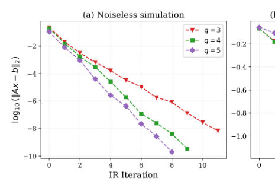
<figcaption class="paper-figure-caption"><b>Fig 2.</b> Figure 1 shows the residual norm log10 }Axpkq´b}2 as a function of the IR iteration index k. In noise-free simulation (panel (a)) the convergence rate is ordered by the precision of the quantum oracle as expected. Initializing the algorithm with a 10´9</figcaption>
</figure>
<figure class="paper-figure-card">
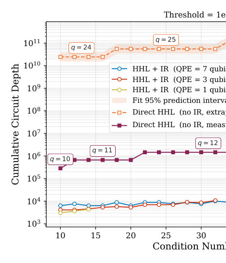
<figcaption class="paper-figure-caption"><b>Fig 3.</b> Figure 2. Cumulative circuit depth required to reach the residual threshold }Ax´b}2 ď ε, with and without iterative refinement. Solid curves with filled markers are measured transpiled depths: HHL + IR at the target ε “ 10´6, and direct HHL at the relaxed threshold ε “ 10´2, for which the required QPE register sizes are directly compilable. The dashed curve with hollow markers is the extrapolated direct-HHL depth at ε “ 10´6, obtained from a fitted depth model; the shaded band is the fit’s 95% prediction interval. Boxed labels indicate the required QPE register size q on each plateau.</figcaption>
</figure>
<figure class="paper-figure-card">

<figcaption class="paper-figure-caption"><b>Fig 4.</b> Figure 3. Trade-offs between iterative refinement iterations and quantum resources for solving a 64-variable linear system to a desired residual using HHL. Color encodes the resulting residual at each parameter combination as log10p}Ax ´ b}2q, and contour lines show cumulative quantum resources across all IR iterations. In the left plot, 6 QPE qubits are used for the HHL circuit, and in the right plot, 106 shots are used to readout x from |xy at each iteration of iterative refinement.</figcaption>
</figure>
</div>
<p><strong>Summary.</strong> This paper introduces an Iterative Refinement (IR) framework to overcome a major hurdle in quantum linear system solving: the polynomial resource scaling when high precision is required via tomography. By structuring the computation as a sequence of low-precision steps, the authors achieve polylogarithmic scaling in the inverse error tolerance, making high-accuracy quantum computation more feasible.</p>
<p><strong>Why it may be interesting.</strong> It provides a crucial algorithmic tool for achieving high-accuracy quantum simulations by decoupling the resource scaling of precision from the circuit depth, which is vital for practical quantum simulation of physical systems.</p>
<details>
<summary>Detailed structure</summary>
<p><strong>Main problem.</strong> The paper addresses the limitation in quantum algorithms that combine Quantum Linear System Algorithms (QLSA) with quantum state tomography (QTA), where the required precision introduces a polynomial dependence on the inverse error tolerance.</p>
<p><strong>Main result.</strong> An Iterative Refinement (IR) framework is proposed that reduces the overall dependence on the target precision from polynomial to polylogarithmic, allowing high-precision solutions using only fixed-precision quantum subroutines.</p>
<p><strong>Method.</strong> The core method is applying classical iterative refinement techniques to the quantum computation process, solving a sequence of related, low-precision linear systems to progressively refine the solution.</p>
<p><strong>Model / system.</strong> The analysis focuses on solving the linear system problem (LSP): Ax = b, within the framework of quantum computation. It analyzes performance across three input models: QRAM, LCU, and sparse-access oracles.</p>
<p><strong>Key observables.</strong> Residual error ($\|Ax' - b\|^2$), cumulative circuit depth, and the dependence of complexity on the inverse error tolerance ($\epsilon^{-1}$).</p>
<p><strong>Important parameters / regimes.</strong> Condition number ($\kappa_A$), target precision ($\epsilon$), and the number of required iterations ($O(\log(1/\epsilon))$).</p>
<p><strong>Assumptions / limitations.</strong> The analysis assumes the ability to perform fixed-precision quantum solves and tomography steps, and that the residual reduction is geometric at each step.</p>
<p><strong>Figures summary.</strong> Figures compare the cumulative circuit depth of direct HHL vs. HHL+IR, showing IR maintains a much lower, stable depth, and heatmaps illustrate the resource trade-off between IR iterations and QPE qubits/shots.</p>
<p><strong>Paper structure.</strong> The paper reviews QLSA advancements, details the IR algorithm, provides a complexity analysis under various input models, and validates the framework using numerical experiments on both simulators and hardware.</p>
</details>
<details>
<summary>Abstract</summary>
<p>We present and analyze an iterative refinement (IR) framework for improving the precision dependence of algorithms that combine a quantum linear system algorithm (QLSA) with quantum state tomography. Existing QLSAs achieve polylogarithmic dependence on the inverse error tolerance to prepare a quantum state encoding the solution, but extracting a classical description of such a state via tomography typically introduces a polynomial dependence on the target precision. To retain polylogarithmic dependence in the inverse error tolerance throughout the entire process, we develop an IR scheme that solves a sequence of related linear systems to progressively refine the solution while requiring only fixed-precision quantum subroutines, finally obtaining a classical description of a high-precision solution. We analyze the proposed framework under three input models: quantum-read/classical-write RAM (QRAM), linear combinations of unitaries (LCU), and sparse-access oracles. We evaluate the proposed scheme through numerical experiments on both quantum simulators and real quantum hardware. The results demonstrate that iterative refinement efficiently improves the precision of the solution and exhibits robustness to hardware noise.</p>
</details>
<p><sub><a href="#top">↑ back to top</a></sub></p>

<p><a id="paper-2609.09699"></a></p>
<h3 id="anomalous-hall-response-induced-by-correlated-disorder-in-the-breathing-kagome-lattice-mnmath958mathsn"><a href="http://arxiv.org/abs/2609.09699v1">Anomalous Hall Response Induced by Correlated Disorder in the Breathing Kagome Lattice Mn$_{3}$Sn</a></h3>
<p><strong>Authors:</strong> Tsung-Han Yang, Seng Huat Lee, Hengxin Tan, Yuanpeng Zhang, Benjamin A. Frandsen, Václav Petříček, Huibo Cao, Daniel Olds, Matthew G. Tucker, Jiaqiang Yan, Binghai Yan, Zhiqiang Mao, Qiang Zhang<br>
<strong>Type:</strong> both · <strong>Category:</strong> strongly correlated electrons · <strong>PDF:</strong> <a href="https://arxiv.org/pdf/2609.09699v1">https://arxiv.org/pdf/2609.09699v1</a><br>
<strong>Analysis basis:</strong> full PDF text, analyzed in chunks</p>
<div class="figure-strip-hint">↔ Scroll figures horizontally</div>
<div class="paper-figures-scroll">
<figure class="paper-figure-card">
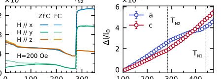
<figcaption class="paper-figure-caption"><b>Fig 1.</b> FIG. 1. Crystal and magnetic structures from diffraction and magnetization measurements. (a) and (b) show top and side views, respectively at 295 K. (c) Temperature-dependent neu- tron powder diffraction at POWGEN showing the emergence of incommensurate magnetic reflections below TN2. (d) Tem- perature dependence of the integrated intensity of the (101) reflection, revealing the magnetic phase transitions at TN1 and TN2. (e) Temperature dependence of the magnetization for H ∥x, y, and z, showing the magnetic transition at TN2. (f) Temperature dependence of the lattice parameters obtained from synchrotron powder x-ray diffraction performed at 28- ID-1 (PDF) beamline.</figcaption>
</figure>
<figure class="paper-figure-card">

<figcaption class="paper-figure-caption"><b>Fig 2.</b> FIG. 2. Magnetic field dependence of the AHE in nearly sto- ichiometric Mn3Sn at 300 K. (a) Schematics of the three con- figurations used for AHE measurements on σyz, σyx and σzx. (b) Field-dependent Hall conductivity components measured at 300 K. (c) Anomalous Hall resistivity ∆ρH = ρH −R0µ0H plotted as a function of magnetization M. (d) Field de- pendence of the antiferromagnetic Hall component, ρAF H = ρH −R0µ0H −Rsµ0M, obtained by subtracting the ordi- nary and magnetization-linear contributions. (e) Comparison of the anomalous Hall resistivity and carrier density n for Mn3+δSn reported in this work and previous studies.</figcaption>
</figure>
<figure class="paper-figure-card">

<figcaption class="paper-figure-caption"><b>Fig 3.</b> FIG. 3. Anomalous Hall conductivity and magnetic-field- induced spin rotation of Mn3Sn. (a) DFT-calculated intrinsic AHC components for the average hexagonal structure. (b) Reference magnetic structure used for the DFT calculations of the intrinsic AHC. (c) Schematic rotation of the noncollinear Mn moments under H ∥x, generating σyz.</figcaption>
</figure>
<figure class="paper-figure-card">
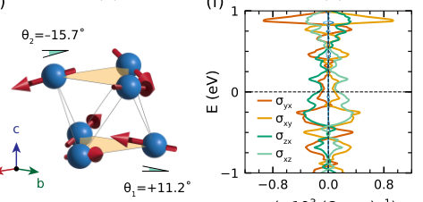
<figcaption class="paper-figure-caption"><b>Fig 4.</b> FIG. 4. Local structural distortion and spin canting in Mn3Sn. (a) Local structural motif of Mn3Sn at 500 K pre- sented in a hexagonal cell. The tilted Mn–Mn–Mn triangles within the kagome plane are resolved, revealing a bond-length disproportionation of 0.2 Å and asymmetric bond angles of 123◦and 117◦, which breaks hexagonal symmetry. (b) RMC modeling results of GK(r) compared to experimental data. (c) Partial pair distribution function for individual atomic pairs, showing well-resolved Mn–Mn and Mn–Sn atomic pairs near 2.7 Å. (d) Magnetic PDF fits showing a substantial mPDF sig- nal. (e) Local magnetic-moment motif at 300 K from mPDF refinement. (f) DFT-calculated intrinsic AHC components...</figcaption>
</figure>
<figure class="paper-figure-card">

<figcaption class="paper-figure-caption"><b>Fig 5.</b> FIG. 5. Single-crystal neutron diffraction and low-T mag- netic structure of Mn3Sn below TN2. (a) Reconstruction of the (H0L) plane near the (−101) nuclear reflection at 6 K, showing magnetic satellites with k1 and k2 and their higher harmonics; the corresponding L profile is shown at right. (b) Observed and calculated structure-factor amplitudes for nu- clear (blue) and magnetic (red) reflections. (c) Refined mag- netic structure combining the k1, k2, and 2k1 + k2 compo- nents. (d) Decomposition into the individual k1, k2, and components.</figcaption>
</figure>
</div>
<p><strong>Summary.</strong> This study investigates the anomalous Hall effect in $ ext{Mn}_3   ext{Sn}$, finding that the transport tensor component $\sigma_{yx}$ is finite despite the average crystal symmetry forbidding it. The key mechanism identified is the activation of this response by correlated, local lattice-spin distortions, demonstrating that disorder acts as a crucial, symmetry-breaking degree of freedom for topological transport.</p>
<p><strong>Why it may be interesting.</strong> The work provides a concrete example of how local, correlated disorder can induce topological electronic responses inaccessible through standard symmetry analysis based on long-range crystal averages, which is a key concept in modern condensed matter theory.</p>
<details>
<summary>Detailed structure</summary>
<p><strong>Main problem.</strong> The study investigates how correlated disorder can activate anomalous Hall responses ($\sigma_{yx}$) in $   ext{Mn}_3   ext{Sn}$, a Kagome antiferromagnetic Weyl semimetal, even when the average crystal symmetry forbids such transport.</p>
<p><strong>Main result.</strong> A finite, hysteretic $\sigma_{yx}$ is observed in the inverse-triangular phase, which is attributed to local, correlated lattice-spin distortions that break symmetry locally, establishing disorder as an active degree of freedom for topological transport.</p>
<p><strong>Method.</strong> The research combines experimental measurements (Hall effect, neutron diffraction, total scattering PDF analysis) with first-principles calculations (DFT using the Berry-curvature Kubo-formula) to link local structural/magnetic details to macroscopic transport properties.</p>
<p><strong>Model / system.</strong> The system is the nearly stoichiometric $   ext{Mn}_3   ext{Sn}$ crystal, which undergoes magnetic transitions from a high-symmetry phase to an inverse-triangular phase, exhibiting correlated orthorhombic lattice distortions and noncoplanar Mn magnetic moments.</p>
<p><strong>Key observables.</strong> Anomalous Hall conductivities ($\sigma_{yx}, \sigma_{zx}, \sigma_{yz}$), lattice parameters, magnetic pair distribution functions (PDF), and local symmetry descriptions ($Ama2$).</p>
<p><strong>Important parameters / regimes.</strong> Transition temperatures ($T_{N1} \approx 440 	ext{ K}, T_{N2} \approx 280 	ext{ K}$), magnetic field strength ($H$), and the degree of local lattice distortion.</p>
<p><strong>Assumptions / limitations.</strong> The analysis assumes that electronic transport is sensitive to local symmetry breaking over finite length scales, which is captured by analyzing local structure via total scattering and mPDF, rather than just the Bragg-average structure.</p>
<p><strong>Figures summary.</strong> Figures show temperature dependence of AHE components, lattice parameter changes across transitions, and comparisons between DFT predictions for average vs. distorted structures.</p>
<p><strong>Paper structure.</strong> The paper systematically analyzes the anomalous Hall response across magnetic transitions, using structural refinement (PDF) and DFT calculations to pinpoint the role of local symmetry breaking (correlated disorder) in enabling symmetry-forbidden transport channels.</p>
</details>
<details>
<summary>Abstract</summary>
<p>Macroscopic transport tensors are generally constrained by the average crystallographic and magnetic symmetries of a material. In the kagome antiferromagnetic Weyl semimetals Mn$_{3+δ}X$ ($X=$~Sn or Ge), previous studies showed that the anomalous Hall conductivity $σ_{yx}$ is forbidden by the average \hexsg{} structure and coplanar inverse-triangular magnetic order. Here we report that nearly stoichiometric Mn$_3$Sn nevertheless exhibits a finite $σ_{yx}$ with large hysteresis, together with enhanced $σ_{zx}$ and $σ_{yz}$, in the inverse-triangular phase below $T_{\mathrm{N1}}\approx 440~\mathrm{K}$, whereas all AHE components vanish in the amplitude-modulated conical phase below $T_{\mathrm{N2}}\approx 280~\mathrm{K}$. Total scattering and magnetic pair distribution function analysis reveal correlated orthorhombic distortions and noncoplanar Mn moments. First-principles calculations show that this coupled lattice-spin distortion activates the average symmetry forbidden $σ_{yx}$ within the inverse-triangular phase. Its disappearance below $T_{\mathrm{N2}}$ indicates that the correlated disorder must cooperate with a long-range inverse-triangular antiferromagnetic order capable of supporting Berry curvature. Our results establish correlated disorder as an active symmetry-breaking degree of freedom that enables topological transport inaccessible from the Bragg-average structure alone.</p>
</details>
<p><sub><a href="#top">↑ back to top</a></sub></p>

<p><a id="paper-2609.10172"></a></p>
<h3 id="brst-quantization-for-the-restoration-of-broken-symmetries-a-pedagogical-example"><a href="http://arxiv.org/abs/2609.10172v1">BRST quantization for the restoration of broken symmetries: a pedagogical example</a></h3>
<p><strong>Authors:</strong> Pranav Sharma, R. J. Furnstahl<br>
<strong>Type:</strong> theory · <strong>Category:</strong> other · <strong>PDF:</strong> <a href="https://arxiv.org/pdf/2609.10172v1">https://arxiv.org/pdf/2609.10172v1</a><br>
<strong>Analysis basis:</strong> full PDF text, analyzed in chunks</p>
<div class="figure-strip-hint">↔ Scroll figures horizontally</div>
<div class="paper-figures-scroll">
<figure class="paper-figure-card">
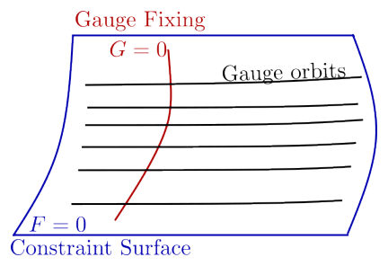
<figcaption class="paper-figure-caption"><b>Fig 1.</b> FIG. 1: There are multiple physically equivalent trajectories (gauge orbits) in the phase space of a gauge theory. A gauge fixing condition (red line) picks just one point along each set of gauge orbits, defining a “gauge slice”. Figure adapted from [14].</figcaption>
</figure>
<figure class="paper-figure-card">

<figcaption class="paper-figure-caption"><b>Fig 2.</b> FIG. 2: a) The original system of particles has a global translational symmetry: the system can be uniformly translated to any location on the x axis and have the same intrinsic dynamics. (b) The system can now be moved arbitrarily at each moment in time, with an adjustment in R keeping it fixed as if it is at the same point on the line.</figcaption>
</figure>
<figure class="paper-figure-card">
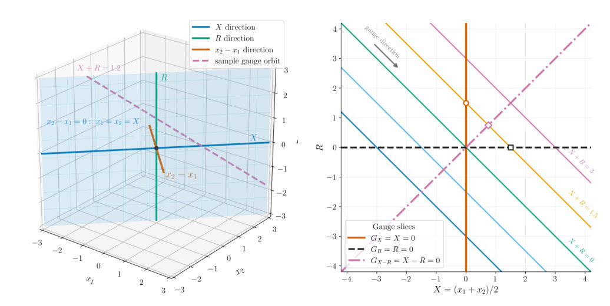
<figcaption class="paper-figure-caption"><b>Fig 3.</b> FIG. 3: (a) The coordinate portion of the extended phase space for the two-body system, with the plane defined by the collective coordinate R and the CoM of the original DoFs X = (x1 + x2)/2 highlighted. Physically equivalent configurations of the system generated by the constraint Eq. (7) (also known as gauge orbits) lie on such a plane. (b) The CoM and collective coordinate plane with several options for gauge-fixing illustrated (c.f. the red line in Fig. 1). The choice X = 0 corresponds to the gauge-fixing choice used to exactly diagonalize the Hamiltonian in Sec. IV. The choice R = 0 reduces us back to the original problem.</figcaption>
</figure>
<figure class="paper-figure-card">

<figcaption class="paper-figure-caption"><b>Fig 4.</b> FIG. 4: Energy as a function of variational parameter α for a Gaussian potential well with (a) a Lorentzian product ansatz and (b) a super-Gaussian product ansatz. Results for VAP, Hint, and plain H are compared to the exact result and PAV evaluated with α∗ H and α∗ Hint.</figcaption>
</figure>
<figure class="paper-figure-card">
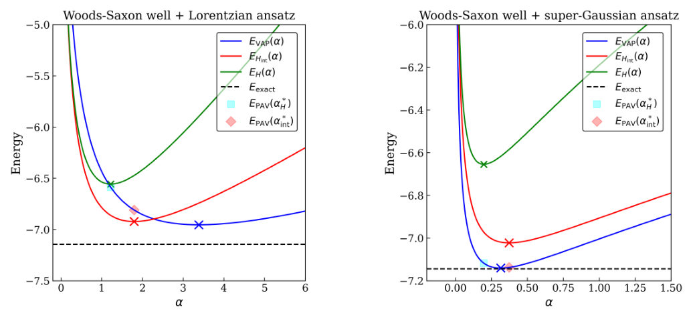
<figcaption class="paper-figure-caption"><b>Fig 5.</b> FIG. 5: Energy as a function of variational parameter α for a Woods-Saxon potential well with (a) a Lorentzian product ansatz and (b) a super-Gaussian product ansatz. Results for VAP, Hint, and plain H are compared to the exact result and PAV evaluated with H and Hint.</figcaption>
</figure>
</div>
<p><strong>Summary.</strong> This paper introduces BRST quantization as a rigorous, systematic method to restore broken symmetries in quantum many-body systems, using a simple two-body model for illustration. It shows that by treating the symmetry as a local gauge symmetry, the formalism correctly cancels spurious degrees of freedom in both Hamiltonian and path integral treatments. This offers a powerful alternative to traditional projection techniques for effective field theories.</p>
<p><strong>Why it may be interesting.</strong> The systematic handling of gauge symmetries via BRST quantization is a powerful, general technique applicable to any physical system where approximate methods break continuous symmetries, making it relevant for advanced many-body theory.</p>
<details>
<summary>Detailed structure</summary>
<p><strong>Main problem.</strong> The paper addresses the theoretical challenge of restoring symmetries in many-body quantum systems when using approximate reference state methods that inherently break these symmetries.</p>
<p><strong>Main result.</strong> It demonstrates that BRST quantization provides a systematic and consistent alternative to conventional projection methods for handling symmetry restoration, particularly by converting global symmetries into local gauge symmetries.</p>
<p><strong>Method.</strong> The core method involves promoting global symmetries to local gauge symmetries, applying the BRST formalism (using ghost variables), and developing both Hamiltonian and path integral formulations to ensure gauge invariance in observables.</p>
<p><strong>Model / system.</strong> The analysis uses a pedagogical two-body system of interacting masses in one dimension, which serves as a model to illustrate the general mechanism applicable to complex many-body systems and effective field theories.</p>
<p><strong>Key observables.</strong> Gauge invariant observables, the intrinsic energy spectrum (viewed from the collective rest frame), and the cancellation of spurious dynamics related to the center of mass.</p>
<p><strong>Important parameters / regimes.</strong> The coupling constant of the potential V, the variational parameter alpha, and the limit $\mu 	o 0$ in the path integral formulation.</p>
<p><strong>Assumptions / limitations.</strong> The primary assumption is that the BRST mechanism correctly handles the cancellation of spurious degrees of freedom, and the path integral results are strictly valid only in the limit where the gauge-fixing width parameter $\mu$ vanishes.</p>
<p><strong>Figures summary.</strong> Figures illustrate the redundancy of gauge orbits in phase space, the transition from global to local symmetry via collective coordinates, and the comparison of energy minimization results using various variational ansätze.</p>
<p><strong>Paper structure.</strong> The paper progresses from identifying the symmetry restoration problem to reformulating the system using collective coordinates, applying the BRST formalism to derive both Hamiltonian and path integral treatments, and finally comparing the consistency of gauge fixing methods.</p>
</details>
<details>
<summary>Abstract</summary>
<p>We present a pedagogical showcase of BRST quantization for restoring symmetries in nuclear many-body systems as a reformulation and potential alternative to conventional projection methods. The formalism is illustrated using translational invariance for a simple system of two interacting masses in one dimension, but with an eye toward generalizing to more particles, higher dimensions, and other symmetries. We explain the considerations underlying particular choices within the BRST construction, and develop both Hamiltonian and path integral formulations to provide guidance for the variety of many-body and effective field theory contexts where gauge fixing for symmetry restoration might be useful. For the demonstration system we show how to diagonalize within the extended BRST phase space, how variation after projection is recovered for product reference states, how the corresponding gauge-fixed functional integral is constructed, and how collective zero modes are isolated and controlled. Throughout, we keep in mind extensions of BRST symmetry to various approximation schemes as a guide for consistent symmetry restoration.</p>
</details>
<p><sub><a href="#top">↑ back to top</a></sub></p>

<p><a id="paper-2609.09731"></a></p>
<h3 id="conditions-for-global-optimality-in-quantum-arimoto-blahut-algorithms"><a href="http://arxiv.org/abs/2609.09731v1">Conditions for Global Optimality in Quantum Arimoto-Blahut Algorithms</a></h3>
<p><strong>Authors:</strong> Geng Liu, Masahito Hayashi<br>
<strong>Type:</strong> theory · <strong>Category:</strong> quantum information and computing · <strong>PDF:</strong> <a href="https://arxiv.org/pdf/2609.09731v1">https://arxiv.org/pdf/2609.09731v1</a><br>
<strong>Analysis basis:</strong> full PDF text, analyzed in chunks</p>
<div class="figure-strip-hint">↔ Scroll figures horizontally</div>
<div class="paper-figures-scroll">
<figure class="paper-figure-card">
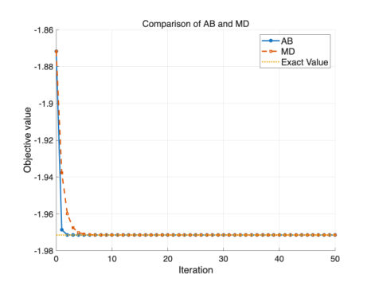
<figcaption class="paper-figure-caption"><b>Fig 1.</b> Fig. 1. Comparison of AB and MD iterative behavior in the unconstrained case. The vertical axis shows the value of f(ρ). The horizontal axis shows the number of iterations. The blue line represents the iterative behavior of the AB algorithm. The orange line represents the iterative behavior of the MD algorithm. The yellow line represents the theoretical value of −D(Ddeph∥Dp).</figcaption>
</figure>
<figure class="paper-figure-card">

<figcaption class="paper-figure-caption"><b>Fig 2.</b> Fig. 2. Comparison of AB and MD iterative behavior in the constrained case. The vertical axis shows the value of f(ρ). The horizontal axis shows the number of iterations. The blue line represents the iterative behavior of the AB algorithm. The orange line represents the iterative behavior of the MD algorithm. The yellow line represents the theoretical value of −D(Ddeph∥Dp).</figcaption>
</figure>
<figure class="paper-figure-card">

<figcaption class="paper-figure-caption"><b>Fig 3.</b> Fig. 3. Comparison of certified suboptimality bounds and the true objective gap along the AB trajectory in the unconstrained case. The vertical axis shows the suboptimality on a logarithmic scale. The horizontal axis shows the number of iterations. The blue, orange, yellow, and purple lines represent the certified bounds obtained with h = 10−6, 10−8, 10−10, and 10−12, respectively. The green line represents the true objective gap f(ρ(t)) −f∗.</figcaption>
</figure>
<figure class="paper-figure-card">
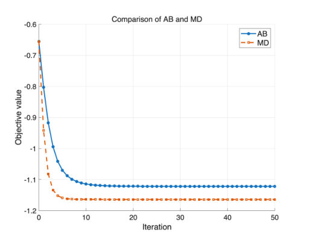
<figcaption class="paper-figure-caption"><b>Fig 4.</b> Fig. 5. Comparison of AB and MD iterative behavior associated with D(Dad∥Dp). The vertical axis shows the value of f(ρ). The horizontal axis shows the number of iterations. The blue line represents the iterative behavior of the AB algorithm. The orange line represents the iterative behavior of the MD algorithm.</figcaption>
</figure>
<figure class="paper-figure-card">
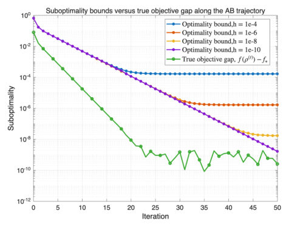
<figcaption class="paper-figure-caption"><b>Fig 5.</b> Fig. 4. Comparison of certified suboptimality bounds and the true objective gap along the AB trajectory in the constrained case. The vertical axis shows the suboptimality on a logarithmic scale. The horizontal axis shows the number of iterations. The blue, orange, yellow, and purple lines represent the certified bounds obtained with h = 10−4, 10−6, 10−8, and 10−10, respectively. The green line represents the true objective gap f(ρ(t)) −f∗.</figcaption>
</figure>
</div>
<p><strong>Summary.</strong> This work provides structural criteria to determine when quantum optimization algorithms, specifically the Arimoto-Blahut method, achieve global optimality. It shows that global optimality can be verified by checking a condition involving the objective gradient and the update direction, even if the algorithm's path differs from other known methods. This offers a powerful, computable diagnostic tool for quantum information theory.</p>
<p><strong>Why it may be interesting.</strong> It provides rigorous mathematical tools to assess the convergence quality of iterative quantum optimization algorithms (like AB) without needing to assume the algorithm follows the path of a known, more complex method (like MD).</p>
<details>
<summary>Detailed structure</summary>
<p><strong>Main problem.</strong> The paper establishes necessary and sufficient conditions for the global optimality of fixed points generated by generalized Arimoto-Blahut (AB) algorithms when optimizing quantum objectives.</p>
<p><strong>Main result.</strong> Global optimality at a full-rank AB fixed point is equivalent to a structural condition relating the AB update direction and the objective gradient to the constraint normal space. This condition is weaker than requiring pathwise equivalence between AB and Mirror Descent (MD) updates.</p>
<p><strong>Method.</strong> The authors derive structural criteria by comparing the variational forms of the AB and MD updates, and they develop <em>a posteriori</em> optimality certificates based on feasible directional derivatives requiring only objective function evaluations.</p>
<p><strong>Model / system.</strong> The analysis focuses on optimizing functions (like quantum relative entropy) over quantum states $
ho$ constrained to a manifold $M$ defined by linear constraints, often involving quantum channels.</p>
<p><strong>Key observables.</strong> AB fixed points ($
ho^*$), the objective gradient ($
abla f(
ho)$), and the objective gap, which is bounded by finite-difference certificates.</p>
<p><strong>Important parameters / regimes.</strong> The structure of the linear constraints defining the state manifold $M$, and the specific form of the objective function $\Omega(
ho)$.</p>
<p><strong>Assumptions / limitations.</strong> The analysis assumes the objective function is convex and differentiable, and it distinguishes between one-step equivalence and pathwise equivalence.</p>
<p><strong>Figures summary.</strong> The notes do not provide a summary of figures, but mention numerical experiments illustrating convergence along different trajectories and validating the optimality certificates.</p>
<p><strong>Paper structure.</strong> The paper builds from establishing the general optimality condition ($\Omega(
ho^<em>) - 
abla f(
ho^</em>) \in N_M$) to comparing AB and MD algorithms, and finally developing computable, objective-evaluation-based optimality certificates.</p>
</details>
<details>
<summary>Abstract</summary>
<p>Generalized Arimoto--Blahut (AB) algorithms are widely used in information theory and quantum optimization, but monotonic objective decrease and numerical stabilization do not guarantee global optimality. We establish necessary and sufficient conditions for the global optimality of full-rank AB fixed points for convex differentiable objectives under linear constraints. An AB fixed point is globally optimal if and only if the AB update direction and the objective gradient differ by an element of the constraint normal space at that point. The same compatibility condition characterizes agreement between individual AB and mirror-descent (MD) updates, whereas pathwise equivalence requires it along the entire common trajectory. Thus, an AB algorithm may follow a trajectory different from MD and still reach the global optimum. We also develop a posteriori optimality certificates based on feasible directional derivatives, including finite-difference upper bounds on the objective gap that require only objective evaluations. For channel relative entropy between dephasing and depolarizing channels, we analytically identify the global minimizer as the unique full-rank AB fixed point, although pathwise equivalence fails. Numerical experiments illustrate convergence of AB and MD along different trajectories and validate the certificates. By contrast, an amplitude-damping example shows that a monotone AB iteration can stabilize at a suboptimal fixed point, whose nonoptimality is detected by the finite-difference certificate. These results provide structural and computable criteria for assessing global optimality in quantum AB algorithms.</p>
</details>
<p><sub><a href="#top">↑ back to top</a></sub></p>

<p><a id="paper-2609.09993"></a></p>
<h3 id="direct-cultivation-of-entangled-math983math-magic-states"><a href="http://arxiv.org/abs/2609.09993v1">Direct Cultivation of Entangled $|CS\rangle$ Magic States</a></h3>
<p><strong>Authors:</strong> Gunsik Min, Jun Heo<br>
<strong>Type:</strong> theory · <strong>Category:</strong> quantum information and computing · <strong>PDF:</strong> <a href="https://arxiv.org/pdf/2609.09993v1">https://arxiv.org/pdf/2609.09993v1</a><br>
<strong>Analysis basis:</strong> full PDF text, analyzed in chunks</p>
<div class="figure-strip-hint">↔ Scroll figures horizontally</div>
<div class="paper-figures-scroll">
<figure class="paper-figure-card">

<figcaption class="paper-figure-caption"><b>Fig 1.</b> FIG. 1. Architecture overview and indirect comparator. (a) The indirect route prepares three logical |T⟩L resources and converts them to |CS⟩L with a Clifford+T circuit. (b) The direct route starts from two Steane [[7, 1, 3]] blocks in |+⟩L, applies the six-check sequence C1, C2, C12 | Dmid | C1, C2, C12, and immediately transfers the accepted state through the Steane-to-d = 5 escape and direct d = 5→13 surface-code growth. The three-T route is used only as a resource comparator.</figcaption>
</figure>
<figure class="paper-figure-card">
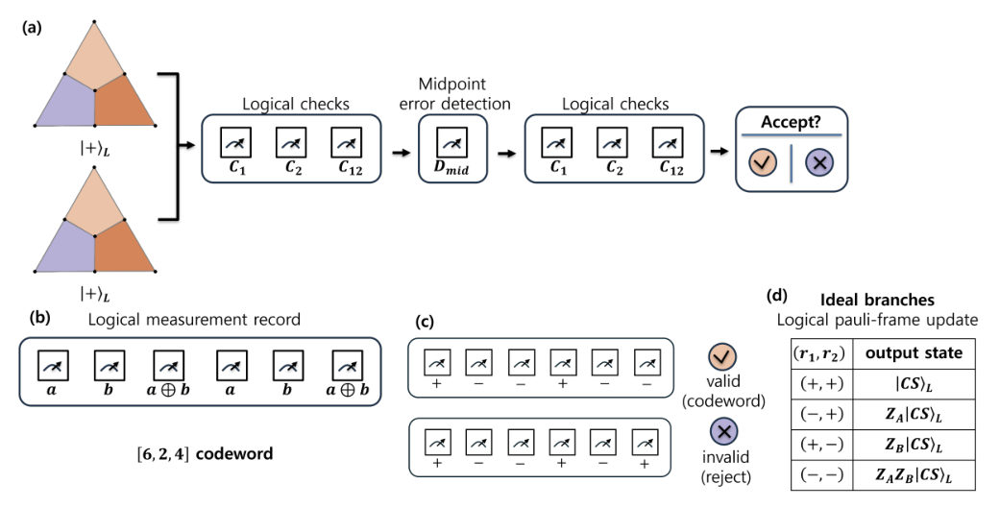
<figcaption class="paper-figure-caption"><b>Fig 2.</b> FIG. 2. Six-check measurement sequence and coded record. (a) The two Steane blocks undergo C1, C2, and C12 measurements, midpoint error detection Dmid, and a second measurement triple. (b) The ideal history g6(a, b) = (a, b, a ⊕ b, a, b, a ⊕b) forms a [6, 2, 4] record code. (c) Records outside the four valid codewords are rejected. (d) All four ideal branches are usable and differ only by the Pauli-frame update Za AZb B.</figcaption>
</figure>
<figure class="paper-figure-card">
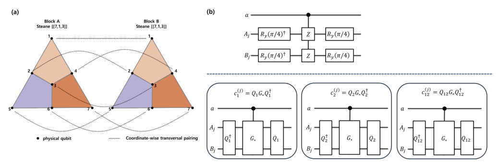
<figcaption class="paper-figure-caption"><b>Fig 3.</b> FIG. 3. Steane-coordinate checks and CZZ-based compilation. (a) Matching coordinates of Steane blocks A and B realize the logical checks C1, C2, and C12 through transversal products of the local operators. (b) A cat ancilla controls G∗= C(H ⊗H), synthesized from one CZZ interaction and local Ry(π/4) rotations. Clifford wrappers Q1, Q2, and Q12 give the three coordinate checks. The six-check core contains 42 CZZ, 56 CX, and 224 one-qubit locations.</figcaption>
</figure>
<figure class="paper-figure-card">

<figcaption class="paper-figure-caption"><b>Fig 4.</b> FIG. 4. Factory yield and accepted-output classification. (a) Acceptance of the six-check core and the complete factory. The two curves use independent calibration and evaluation samples. (b) Sources of rejection before the downstream stage. (c) Number of sampled fault locations in operationally accepted runs. (d) Accepted outputs are classified as either closed at the validation boundary or containing a detectable residual syndrome. Detectable residuals are not retrospectively rejected.</figcaption>
</figure>
<figure class="paper-figure-card">

<figcaption class="paper-figure-caption"><b>Fig 5.</b> Figure 5(b) shows how decoder workload changes with p. The fraction of nontrivial records that reach the four- coset BP+OSD stage grows from about 4.7% at 10−4 to 44.7% at 10−3, while the median gap falls from 13.24 to 6.91. Every audited record has full four-coset coverage and no BP+OSD decoding failure is observed. The trend therefore reflects increasing ambiguity at higher p.</figcaption>
</figure>
</div>
<p><strong>Summary.</strong> This paper presents a detailed, fault-tolerant protocol for generating an entangled non-Clifford magic state, $|CS\rangle$. It develops a direct cultivation architecture utilizing advanced error correction techniques and rigorously compares its resource cost against an established indirect method. The results confirm the feasibility and operational advantage of the direct approach at low noise levels.</p>
<p><strong>Why it may be interesting.</strong> The rigorous, quantitative comparison of resource costs between two distinct state preparation pathways (direct vs. indirect) provides critical engineering benchmarks for scaling fault-tolerant quantum computation.</p>
<details>
<summary>Detailed structure</summary>
<p><strong>Main problem.</strong> The paper addresses the challenge of developing a fault-tolerant, direct architecture for cultivating an entangled non-Clifford magic state, $|CS\rangle$, which is a crucial resource for quantum computation.</p>
<p><strong>Main result.</strong> The authors demonstrate that $|CS\rangle$ can be cultivated directly using a protected branch record and an explicitly certified fault-order-three output channel. This direct route proves operationally superior to an indirect three-T resource route at lower noise levels.</p>
<p><strong>Method.</strong> The methodology involves constructing a complex error-correcting factory using a minimal six-check classical record, verified CAT gadgets, Steane error detection, and a multi-stage decoder (low-order resolution, catalogue lookup, and four-coset BP+OSD).</p>
<p><strong>Model / system.</strong> The system is modeled using fault-tolerant quantum computation principles, specifically employing surface codes and building upon Steane error detection gadgets to achieve the target entangled state $|CS\rangle$.</p>
<p><strong>Key observables.</strong> Acceptance rate, residual syndromes, decoder workload, and the comparison of operational counts between the direct and indirect cultivation routes.</p>
<p><strong>Important parameters / regimes.</strong> Physical error rate ($p$), fault order (up to three), and the logical error rate (LER) used for comparison.</p>
<p><strong>Assumptions / limitations.</strong> The analysis is based on the active-location stochastic-Pauli model, and comparisons rely on specific assumptions regarding the availability of pre-existing output patches.</p>
<p><strong>Figures summary.</strong> Figures illustrate the comparison between the indirect (three $|T\rangle_L$ resources) and direct cultivation routes, detailing the architectural components from Steane blocks to $d=5 	o 13$ growth.</p>
<p><strong>Paper structure.</strong> The paper progresses by first establishing the necessary error-correcting components (e.g., the six-check code), detailing the fault-tolerance audits (up to order three), and finally comparing the resource costs and performance metrics of the direct versus indirect state preparation routes.</p>
</details>
<details>
<summary>Abstract</summary>
<p>Magic-state cultivation has so far focused mainly on single-qubit non-Clifford resources. We develop a direct cultivation architecture for the entangled state $|CS\rangle=CS|++\rangle$. Two commuting Clifford involutions project onto four usable branches related by Pauli-frame updates. A minimal six-bit $[6,2,4]$ record protects the branch label against readout errors that map one valid record to another. Verified CAT$_7$ gadgets, Steane error detection, CZZ-based controlled checks, and immediate Steane-to-surface expansion form the complete factory. The decoder uses 263 operational detector bits, while 168 additional bits are withheld for later validation. Decoding proceeds through exact low-order resolution, a precomputed higher-order catalogue, and four-coset BP+OSD. Under the stated active-location stochastic-Pauli model, exact enumeration finds no accepted closed-boundary logical-failure mechanism through fault order two, while explicit order-three failure mechanisms exist. Finite-$p$ simulations quantify acceptance, residual syndromes, and decoder workload, and targeted sampling of order-three faults estimates the leading logical-error channels. Optimizing the direct $d=5\rightarrow13$ expansion reduces accepted-output operation count by approximately 35--37\%. We compare the two routes at the same binary logical-error rate. Direct CS remains cheaper in operation count at the two lower-noise benchmark points even when the three-$T$ route is given pre-existing output patches. The ordering reverses between $8\times10^{-4}$ and $9\times10^{-4}$. These results show that an entangled non-Clifford state can be cultivated directly with a protected branch record and an explicitly certified fault-order-three output channel.</p>
</details>
<p><sub><a href="#top">↑ back to top</a></sub></p>

<p><a id="paper-2609.09582"></a></p>
<h3 id="ecdsafail-open-autoresearch-for-optimizing-elliptic-curve-point-addition-in-shors-algorithm"><a href="http://arxiv.org/abs/2609.09582v1">ECDSA.Fail: Open Autoresearch for Optimizing Elliptic-Curve Point Addition in Shor's Algorithm</a></h3>
<p><strong>Authors:</strong> Jieyi Long, Theodore Pender, Zhao Huang, Manuel B. Santos, Samrendra Kumar Singh, Bartosz Naskręcki, Bit Wonka, Joe Doyle, Pierre-Luc Dallaire-Demers, Francesco Giannicola, Ruben M. L. Paschoarelli, Oli Freuler, Jackie Chia-Hsun Lee, Vasily Gnuchev, Gopi Kannappan, John Boyer, Xavier Butler, Akash Balasubramani, Jordan Newman, Bereket Dereje, Alexander Hertlein, Robert Kodra, Lucas Levy, Shaan Patel, JT Rose, Matt Zweil, Okechukwu Wisdom, Tarek El-Eter, Edison Lee, Michael Dong, Alan Li, Anto Joseph, Gajesh Naik, Gautham Anant, Soubhik Deb, Justin Drake<br>
<strong>Type:</strong> theory · <strong>Category:</strong> quantum information and computing · <strong>PDF:</strong> <a href="https://arxiv.org/pdf/2609.09582v1">https://arxiv.org/pdf/2609.09582v1</a><br>
<strong>Analysis basis:</strong> full PDF text, analyzed in chunks</p>
<div class="figure-strip-hint">↔ Scroll figures horizontally</div>
<div class="paper-figures-scroll">
<figure class="paper-figure-card">

<figcaption class="paper-figure-caption"><b>Fig 1.</b> Fig. 1: Evolution of the best ECDSA.Fail Q × T score, from the 10.75B baseline to 1.496B at the data cutoff, an 86.1% reduction. The dashed line marks the re- ported Google/Babbush et al. [3] operating point of 2.993B. The challenge score is more than 50% lower, although differing interfaces and accounting conventions make the comparison contextual.</figcaption>
</figure>
<figure class="paper-figure-card">

<figcaption class="paper-figure-caption"><b>Fig 2.</b> Fig. 2: ECDSA.Fail qubit–Toffoli Pareto frontier. White points are challenge sub- missions; orange and purple circles are promoted and non-promoted admitted Pareto points; the cyan dotted curve marks the best observed Q × T; and dia- monds mark the Google/Babbush [3] (blue) and Schrottenloher [59] (pink) op- erating points. External points are contextual because interfaces and accounting conventions differ; see Tables 2 and 3.</figcaption>
</figure>
<figure class="paper-figure-card">

<figcaption class="paper-figure-caption"><b>Fig 3.</b> Fig. 3: Placement of the point-addition kernel within a power-of-two implemen- tation of windowed Shor ECDLP. The coherent exponent registers are pre- pared over Z2256 and split into 16-bit windows. Each window coherently selects a precomputed multiple of G or P and adds it to the accumulator, yielding R = [u]G + [v]P before inverse power-of-two Fourier transforms and measure- ment. Unlike the idealized formulation over Z2 r, the measured Fourier samples need not satisfy the annihilator relation exactly; they concentrate near it and re- quire classical postprocessing followed by verification of the recovered candidate k. The figure shows the coherent-register formulation; an iterative...</figcaption>
</figure>
<figure class="paper-figure-card">
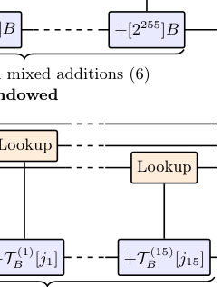
<figcaption class="paper-figure-caption"><b>Fig 4.</b> Fig. 4: The two point-addition interfaces used to compute one scalar multipli- cation [s]B, where (s, B) denotes either (u, G) or (v, P). (a) In the double- and-add approach, each scalar bit si controls a mixed addition of the fixed, classically known point [2i]B to the accumulator |R⟩; this addend is fixed at circuit-construction time and does not occupy a quantum register. (b) In the windowed approach, the scalar is divided into 16-bit words ji = s16i:16i+16. Each |ji⟩indexes a QROM lookup into the precomputed table T (i) B , and the selected point T (i) B [ji] is added coherently to |R⟩. The selected addend is therefore quan- tum data entangled with the window register.</figcaption>
</figure>
<figure class="paper-figure-card">
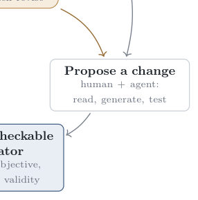
<figcaption class="paper-figure-caption"><b>Fig 5.</b> Fig. 5: The generic open autoresearch discovery loop. Independent human–agent teams select a current-best, Pareto, or deliberately off-frontier base from the shared repository, propose a change, and submit it to a machine-checkable evalu- ator. Verified improvements become shared bases; rejected candidates are logged with their diagnoses and revised. This makes the search cumulative without re- quiring prior coordination beyond the shared objective, evaluator, and public artifacts.</figcaption>
</figure>
</div>
<p><strong>Summary.</strong> This paper details the successful application of an 'Open Autoresearch' methodology to optimize quantum circuits for elliptic-curve point addition, a key subroutine in Shor's algorithm. By leveraging collaborative human and AI efforts, the community drastically reduced the required quantum resources, demonstrating a powerful new paradigm for advancing quantum algorithm efficiency.</p>
<p><strong>Why it may be interesting.</strong> While focused on cryptography, the methodology—using open, AI-augmented, and machine-checkable optimization challenges—is highly relevant to developing scalable quantum algorithms and resource estimation techniques applicable across quantum information science.</p>
<details>
<summary>Detailed structure</summary>
<p><strong>Main problem.</strong> The paper focuses on optimizing the reversible secp256k1 point-addition circuit, which is identified as a critical computational bottleneck in implementing Shor's algorithm for breaking elliptic-curve cryptography.</p>
<p><strong>Main result.</strong> Through an open autoresearch paradigm involving human and AI contributions, the community significantly reduced the benchmark score $S=Q	imes T$ by 86.1%, achieving resource estimates substantially lower than previously published thresholds.</p>
<p><strong>Method.</strong> The research employs an 'Open Autoresearch' framework, where iterative, verifiable improvements are made to a public leaderboard to minimize a spacetime-inspired resource score $S=Q	imes T$. Optimization techniques include advanced circuit design methods like Jump-2 Euclidean Algorithm and Karatsuba Squaring.</p>
<p><strong>Model / system.</strong> The model is a quantum circuit designed to perform elliptic-curve point addition on the secp256k1 curve. The optimization targets the resource cost measured by the product of peak logical qubit width ($Q$) and average executed Toffoli count ($T$).</p>
<p><strong>Key observables.</strong> The primary observable is the resource score $S = Q 	imes T$. Other key metrics include the peak logical qubit width ($Q$), the average executed Toffoli count ($T$), and the empirical success probability ($\hat{p}$).</p>
<p><strong>Important parameters / regimes.</strong> The optimization is benchmarked against specific thresholds set by Google and Schrottenloher, with the best reported score being significantly lower than these benchmarks.</p>
<p><strong>Assumptions / limitations.</strong> Comparisons with prior work are noted to be contextual, as differing interfaces, accounting conventions, and validation scopes preclude claims of formal dominance.</p>
<p><strong>Figures summary.</strong> Figure 1 illustrates the dramatic reduction of the best ECDSA.Fail $Q 	imes T$ score over time, showing the evolution from a high baseline to the current state-of-the-art value. Figure 2 likely maps the Pareto frontier of the qubit-Toffoli trade-off.</p>
<p><strong>Paper structure.</strong> The paper introduces the Open Autoresearch paradigm, details the specific optimization problem (ECDSA.Fail for point addition), presents the quantitative results showing massive score reductions, and discusses the implications for quantum cryptanalysis feasibility.</p>
</details>
<details>
<summary>Abstract</summary>
<p>We propose Open Autoresearch, a paradigm in which humans and AI agents publish evaluator-verified improvements to a public leaderboard. We instantiate it in ECDSA.Fail, optimizing reversible secp256k1 point-addition circuits, a bottleneck in Shor's algorithm for elliptic-curve cryptography. The benchmark minimizes the spacetime-inspired score $S=Q\times T$, where $Q$ is peak logical qubit width and $T$ is average executed Toffoli count. Participants reduced $S$ by 86.1%. At the data cutoff (26 July 2026), the best-scoring circuit uses 1,151 qubits and 1,299,453 average executed Toffoli gates, giving $Q\times T\approx1.496$ billion. This is more than 50% below Google's published point-addition score thresholds (arXiv:2603.28846), under different accounting conventions. Because the benchmark supplies one addend classically, we construct a coherent windowed-addition-compatible variant implementing the single-call interface required by windowed Shor. It uses 1,162 qubits and 1,684,161 average executed Toffoli gates. On 100,000 random inputs, its empirical success probability is $\hat{p}=0.99809$, giving $Q\times T/\hat{p}\approx1.961$ billion under an independently rerunnable per-call sensitivity model, not a full-Shor success estimate. Its qubit and Toffoli counts lie below Google's published thresholds and Schrottenloher's reported operating points (arXiv:2606.02235), although differing interfaces, accounting conventions, and validation scope preclude formal dominance. After the cutoff, the score was further reduced to 1.259 billion, while a separate low-width circuit reached 813 qubits. The public record shows AI agents complementing human judgment, providing evidence for open autoresearch on efficiently evaluable, machine-checkable objectives.</p>
</details>
<p><sub><a href="#top">↑ back to top</a></sub></p>

<p><a id="paper-2609.09718"></a></p>
<h3 id="enhancing-pauli-correlation-encoding-for-quantum-optimization-via-systematic-expressivity-analysis"><a href="http://arxiv.org/abs/2609.09718v1">Enhancing Pauli Correlation Encoding for quantum optimization via systematic expressivity analysis</a></h3>
<p><strong>Authors:</strong> Riku Usuki, Don Arai, Ken N. Okada, Keisuke Fujii<br>
<strong>Type:</strong> theory · <strong>Category:</strong> quantum information and computing · <strong>PDF:</strong> <a href="https://arxiv.org/pdf/2609.09718v1">https://arxiv.org/pdf/2609.09718v1</a><br>
<strong>Analysis basis:</strong> full PDF text, analyzed in chunks</p>
<div class="figure-strip-hint">↔ Scroll figures horizontally</div>
<div class="paper-figures-scroll">
<figure class="paper-figure-card">
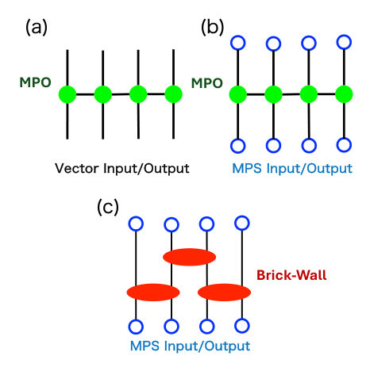
<figcaption class="paper-figure-caption"><b>Fig 1.</b> FIG. 1. Three comparative models based on tensor networks introduced in this study. (a) MPO-based model, (b) MPS- based model, and (c) Brick-wall model. These models are designed so that their internal structures progressively ap- proach the topology of the PCE circuit.</figcaption>
</figure>
<figure class="paper-figure-card">

<figcaption class="paper-figure-caption"><b>Fig 2.</b> FIG. 2. Performance evaluation of the comparative models on the G14 benchmark instance (|V | = 800). (a) Parame- ter Efficiency: The relationship between the total number of parameters (log scale) and the achieved approximation ratio across all models. (b) Structural Comparison: The approxi- mation ratio as a function of the number of layers, comparing the PCE Brick-wall ansatz and the Brick-wall model based on tensor networks, both sharing the same brick-wall connec- tivity.</figcaption>
</figure>
<figure class="paper-figure-card">
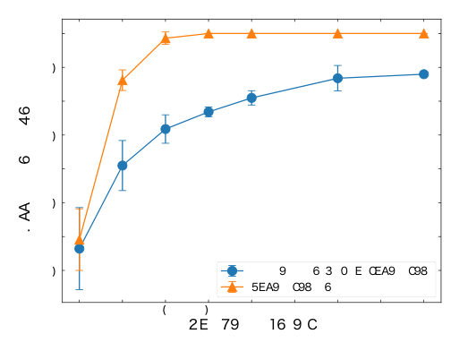
<figcaption class="paper-figure-caption"><b>Fig 3.</b> FIG. 3. Approximation ratio as a function of circuit depth p for conventional unsupervised PCE and supervised optimiza- tion. Each point represents the approximation ratio averaged over three G-set instances with 800 vertices, G6, G11, and G18. For each instance, the best result obtained over five random initializations is used. Error bars indicate the stan- dard deviation across the three instances.</figcaption>
</figure>
<figure class="paper-figure-card">

<figcaption class="paper-figure-caption"><b>Fig 4.</b> FIG. 4. Optimization trajectories starting from circuit pa- rameters that reproduce the best-known solution (AR= 1 at iteration 0). Different choices of (α, β) lead to markedly dif- ferent stability near this solution-reproducing region on the G1 instance.</figcaption>
</figure>
<figure class="paper-figure-card">

<figcaption class="paper-figure-caption"><b>Fig 5.</b> Figure 3 shows that supervised optimization reaches AR = 1.0 with only five layers, whereas unsupervised optimization saturates at a lower AR despite using the same ansatz. This indicates that the ansatz is expres- sive enough to represent strong solutions, and that the main limitation in the conventional setting is not insuffi- cient expressivity but poor trainability under the relaxed unsupervised objective function. This further suggests that performance gains may be possible if one can design unsupervised objective functions that induce optimiza- tion dynamics similar to those of the supervised objective function.</figcaption>
</figure>
</div>
<p><strong>Summary.</strong> This paper investigates the limitations of Pauli Correlation Encoding (PCE) for quantum optimization problems like Max-Cut. The authors diagnose that the primary bottleneck is not the circuit's representational power but the difficulty in training the system using standard relaxed objectives. They propose and validate a multistage continuation framework that successfully enhances PCE performance, making it competitive with advanced classical methods.</p>
<p><strong>Why it may be interesting.</strong> It provides a concrete, actionable algorithmic improvement (multistage optimization) for variational quantum algorithms applied to combinatorial optimization, which is highly relevant for near-term quantum hardware.</p>
<details>
<summary>Detailed structure</summary>
<p><strong>Main problem.</strong> The paper aims to understand and enhance the performance of Pauli Correlation Encoding (PCE) for quantum optimization, specifically addressing performance saturation.</p>
<p><strong>Main result.</strong> The authors propose a multistage continuation framework that significantly improves PCE performance, showing it is limited by trainability under the relaxed objective function, not by the ansatz's expressivity.</p>
<p><strong>Method.</strong> They systematically analyze PCE by comparing it to classical tensor network models and introduce a multistage optimization procedure to guide the training from a smooth to a sharp objective function.</p>
<p><strong>Model / system.</strong> The work focuses on quantum optimization problems, particularly Max-Cut, solved using PCE, which embeds optimization variables in the expectation values of Pauli strings.</p>
<p><strong>Key observables.</strong> Max-Cut cut value, parameter efficiency (comparison to classical models), and gradient norms during optimization stages.</p>
<p><strong>Important parameters / regimes.</strong> The number of vertices (e.g., 800 for G-set instances), the number of stages in the continuation framework (e.g., K=6), and the regularization parameters ($\alpha, eta$).</p>
<p><strong>Assumptions / limitations.</strong> The primary assumption challenged is that performance saturation is due to insufficient expressivity; the paper argues it is due to optimization difficulty (trainability).</p>
<p><strong>Figures summary.</strong> Figures compare PCE performance against classical tensor network models (MPO, MPS, Brick-wall) regarding parameter count and layer depth, demonstrating parameter efficiency and convergence.</p>
<p><strong>Paper structure.</strong> The paper proceeds by first establishing PCE's promise, then diagnosing the performance bottleneck (identifying trainability over expressivity), and finally proposing and testing the multistage continuation framework to overcome this limitation.</p>
</details>
<details>
<summary>Abstract</summary>
<p>Quantum approaches for combinatorial optimization problems have attracted considerable attention in recent years. Among these approaches, Pauli Correlation Encoding (PCE) has emerged as a promising framework for quantum devices with limited qubit resources because it embeds optimization variables in expectation values of Pauli strings. However, the mechanisms underlying its performance and the reasons for its saturation remain unclear. In this work, we investigate these questions through a systematic analysis of expressivity and trainability. First, we compare PCE with classical surrogate models based on tensor networks whose structures progressively approach the topology of the PCE circuit. The results show that PCE attains comparable solution quality with substantially fewer trainable parameters, indicating strong parameter efficiency. Second, to determine whether the performance saturation of conventional PCE is caused by insufficient expressivity or by optimization difficulty, we perform a diagnostic expressivity test in which the circuit is trained toward reference configurations for Max-Cut. The results show that even shallow PCE circuits can represent strong solutions, indicating that the main bottleneck is not the representational power of the ansatz, but the trainability under the relaxed objective function. Motivated by this finding, we propose a multistage continuation framework that gradually transforms a smooth relaxed objective into a sharper objective that more closely approximates the target discrete problem. Numerical experiments on G-set instances with 800 vertices show that the proposed method consistently outperforms conventional PCE and is competitive with representative graph neural network (GNN) methods. These results clarify the main factors behind PCE performance and provide a practical strategy for improving PCE on quantum devices with limited qubit resources.</p>
</details>
<p><sub><a href="#top">↑ back to top</a></sub></p>

<p><a id="paper-2609.10429"></a></p>
<h3 id="faster-computation-with-the-generalized-laplacian-quantum-walk"><a href="http://arxiv.org/abs/2609.10429v1">Faster Computation with the Generalized Laplacian Quantum Walk</a></h3>
<p><strong>Authors:</strong> Jonas Duda, Thomas G. Wong<br>
<strong>Type:</strong> theory · <strong>Category:</strong> quantum information and computing · <strong>PDF:</strong> <a href="https://arxiv.org/pdf/2609.10429v1">https://arxiv.org/pdf/2609.10429v1</a><br>
<strong>Analysis basis:</strong> full PDF text, analyzed in chunks</p>
<div class="figure-strip-hint">↔ Scroll figures horizontally</div>
<div class="paper-figures-scroll">
<figure class="paper-figure-card">
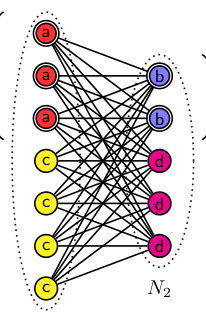
<figcaption class="paper-figure-caption"><b>Fig 1.</b> FIG. 1. A complete bipartite graph with N1 = 7 and N2 = 5 vertices in each partite set, of which k1 = 3 and k2 = 2 vertices are marked in the respective sets, as shown by the double circles. Identically evolving vertices are identically colored and labeled.</figcaption>
</figure>
<figure class="paper-figure-card">

<figcaption class="paper-figure-caption"><b>Fig 2.</b> FIG. 2. Success probability versus time for search on complete bipartite graphs at γ = γa(3). The solid black curve is when α = −5, the red dashed curve is when α = −1, the green dotted curve is when α = 2 and the blue dot-dashed curve is when α = 5.</figcaption>
</figure>
<figure class="paper-figure-card">
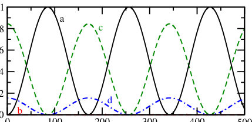
<figcaption class="paper-figure-caption"><b>Fig 3.</b> FIG. 3. The probability at each type of vertex versus time for search on the complete bipartite graph with N1 = 5000, N2 = 2000 vertices, of which k1 = 2 and k2 = 3 are marked, with γ = γa (3) α = −1. The solid black curve is the probability in |a⟩, the red dashed curve is |b⟩(which is near 0 the entire evolution), the green dotted curve is |c⟩, and the blue dot- dashed curve is |d⟩.</figcaption>
</figure>
</div>
<p><strong>Summary.</strong> This paper analyzes quantum search algorithms on bipartite graphs using a quantum walk defined by a generalized Laplacian. The authors prove that by tuning the Laplacian via a parameter $\alpha$, the quantum walk's search time can be made to approach the theoretical optimum. This suggests the generalized Laplacian provides a powerful tool for developing faster quantum algorithms.</p>
<p><strong>Why it may be interesting.</strong> The explicit derivation of how tuning a system parameter ($\alpha$) can push a quantum walk towards an optimal computational limit is highly relevant for designing robust quantum algorithms.</p>
<details>
<summary>Detailed structure</summary>
<p><strong>Main problem.</strong> To prove that a quantum walk governed by a generalized Laplacian can solve a search problem on a complete bipartite graph faster than standard quantum walks.</p>
<p><strong>Main result.</strong> The generalized Laplacian quantum walk achieves an optimal search time scaling, approaching the theoretical minimum time $t^* = rac{\pi}{2} \min \left(rac{N_1}{k_1}, rac{N_2}{k_2}
ight)$ in the limit where the parameter $\alpha 	o \pm\infty$.</p>
<p><strong>Method.</strong> The analysis involves deriving the time evolution operator for the quantum walk Hamiltonian, using asymptotic analysis, and employing perturbation theory to study the behavior as the parameter $\alpha$ becomes very large.</p>
<p><strong>Model / system.</strong> The model is a continuous-time quantum walk on a complete bipartite graph, governed by a Hamiltonian derived from a generalized Laplacian $L_\alpha = L + \alpha D$. The evolution is tracked by analyzing the probability amplitudes at different vertex types.</p>
<p><strong>Key observables.</strong> Success probability at marked vertices, and the optimal search runtime $t^*$.</p>
<p><strong>Important parameters / regimes.</strong> The parameter $\alpha$ (controlling the degree matrix contribution), the graph sizes ($N_1, N_2$), and the number of marked vertices ($k_1, k_2$).</p>
<p><strong>Assumptions / limitations.</strong> The analysis relies on asymptotic approximations, particularly for large graph sizes ($N_1, N_2$) when applying perturbation theory.</p>
<p><strong>Figures summary.</strong> Figure 2 shows the success probability vs. time for various $\alpha$ values, demonstrating the speedup. Figure 3 illustrates the time evolution of probabilities at different vertex types for a specific case.</p>
<p><strong>Paper structure.</strong> The paper establishes the quantum walk model using the generalized Laplacian, analyzes the time evolution using the Hamiltonian in a reduced basis, and derives the optimal runtime by taking limits on the parameter $\alpha$.</p>
</details>
<details>
<summary>Abstract</summary>
<p>Quantum walks are the quantum analogues of classical random walks or Markov chains. They are universal models of quantum computing, and they underpin a variety of quantum algorithms. We prove that a continuous-time quantum walk effected by a generalized Laplacian, which can arise in spin chains, can solve a computational problem more quickly than typical quantum walks governed by the standard Laplacian or adjacency matrix. This generalized Laplacian consists of the standard Laplacian plus a real-valued multiple of the degree matrix, and we prove that as the magnitude of the multiple of the degree matrix is increased, its corresponding quantum walk can search the complete bipartite graph with multiple marked vertices in time that approaches the optimal. This raises the potential for the generalized Laplacian quantum walk to be a useful method for developing additional faster quantum algorithms.</p>
</details>
<p><sub><a href="#top">↑ back to top</a></sub></p>

<p><a id="paper-2609.09753"></a></p>
<h3 id="generalized-fidelity-and-the-data-processing-inequality"><a href="http://arxiv.org/abs/2609.09753v1">Generalized Fidelity and the Data Processing Inequality</a></h3>
<p><strong>Authors:</strong> Reza Rajaei<br>
<strong>Type:</strong> theory · <strong>Category:</strong> quantum information and computing · <strong>PDF:</strong> <a href="https://arxiv.org/pdf/2609.09753v1">https://arxiv.org/pdf/2609.09753v1</a><br>
<strong>Analysis basis:</strong> full PDF text, analyzed in chunks</p>
<div class="figure-strip-hint">↔ Scroll figures horizontally</div>
<div class="paper-figures-scroll">
<figure class="paper-figure-card">

<figcaption class="paper-figure-caption"><b>Fig 1.</b> Low-resolution page preview, page 2</figcaption>
</figure>
<figure class="paper-figure-card">
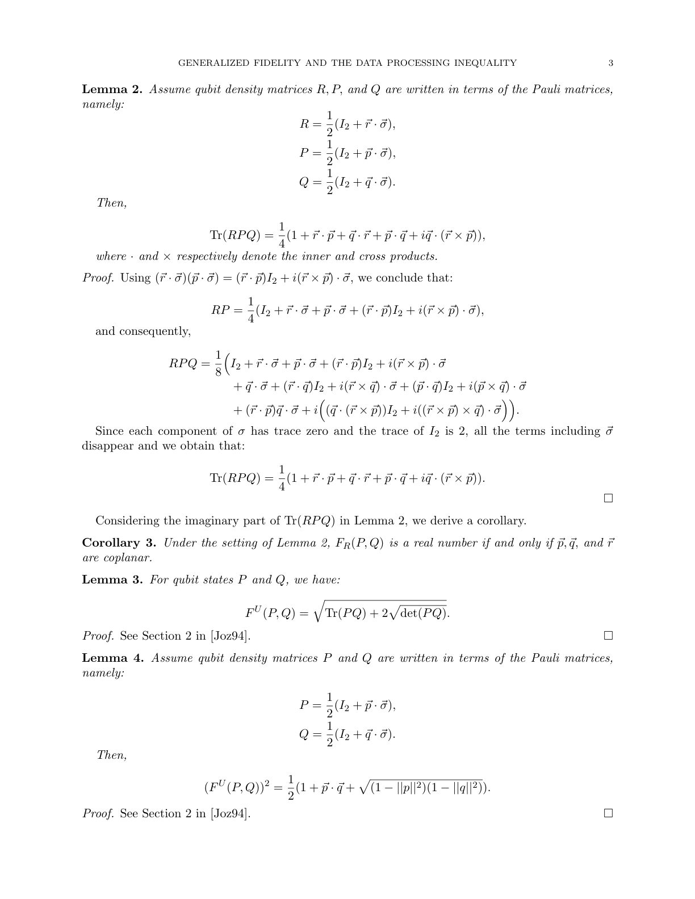
<figcaption class="paper-figure-caption"><b>Fig 2.</b> Low-resolution page preview, page 3</figcaption>
</figure>
<figure class="paper-figure-card">

<figcaption class="paper-figure-caption"><b>Fig 3.</b> Low-resolution page preview, page 4</figcaption>
</figure>
<figure class="paper-figure-card">

<figcaption class="paper-figure-caption"><b>Fig 4.</b> Low-resolution page preview, page 5</figcaption>
</figure>
<figure class="paper-figure-card">

<figcaption class="paper-figure-caption"><b>Fig 5.</b> Low-resolution page preview, page 6</figcaption>
</figure>
</div>
<p><strong>Summary.</strong> This theoretical note examines the generalized Bures-Wasserstein distance derived from the generalized fidelity in quantum information. The authors prove that this distance fails the Data Processing Inequality in dimensions higher than two. For the qubit case, they establish specific sufficient conditions under which the DPI holds, providing deeper insights into quantum channel characterization.</p>
<p><strong>Why it may be interesting.</strong> The study of distance metrics and their monotonicity properties (like DPI) is fundamental in quantum information theory, especially when analyzing the robustness of quantum channels.</p>
<details>
<summary>Detailed structure</summary>
<p><strong>Main problem.</strong> The paper investigates whether the generalized Bures-Wasserstein distance, induced by the generalized fidelity, satisfies the Data Processing Inequality (DPI) for quantum channels.</p>
<p><strong>Main result.</strong> The distance fails to satisfy the DPI in dimensions greater than two, but sufficient conditions for the DPI are derived for the qubit case (dimension two).</p>
<p><strong>Method.</strong> The authors use explicit formulas for the generalized fidelity, derived using Pauli matrix representations for qubits, and construct counterexamples to test the DPI.</p>
<p><strong>Model / system.</strong> The analysis focuses on quantum states represented by positive semi-definite matrices, particularly restricting the investigation to the qubit case (2x2 matrices).</p>
<p><strong>Key observables.</strong> Generalized Fidelity ($F_R(P, Q)$), Squared Generalized Bures-Wasserstein Distance ($B_R(P, Q)$), and the Uhlmann fidelity ($F_U$).</p>
<p><strong>Important parameters / regimes.</strong> The dimension of the system ($n$), and the specific matrices defining the generalized fidelity.</p>
<p><strong>Assumptions / limitations.</strong> The analysis provides sufficient conditions for the qubit case, but the DPI is not settled in full generality for dimension two.</p>
<p><strong>Paper structure.</strong> The paper first establishes the definitions for the generalized fidelity and distance. It then proves the failure of the DPI for $n \ge 3$ using counterexamples. Finally, it derives sufficient conditions for the DPI in the qubit case and determines when the generalized fidelity reduces to the Uhlmann fidelity.</p>
</details>
<details>
<summary>Abstract</summary>
<p>In this note, we show that the generalized Bures--Wasserstein distance induced by the generalized fidelity does not satisfy the data processing inequality in dimensions greater than two. In dimension two, although we do not settle the DPI in full generality, we derive two sufficient conditions guaranteeing it by using an explicit formula for the real part of the generalized fidelity. Furthermore, we find a necessary and sufficient condition under which the generalized fidelity reduces to the Uhlmann fidelity.</p>
</details>
<p><sub><a href="#top">↑ back to top</a></sub></p>

<p><a id="paper-2609.09421"></a></p>
<h3 id="induced-random-mixed-states-are-symmetric-dirichlet-mixtures"><a href="http://arxiv.org/abs/2609.09421v1">Induced random mixed states are symmetric Dirichlet mixtures</a></h3>
<p><strong>Authors:</strong> Brian T. Kirby, Alexander C. B. Greenwood, Sanjaya Lohani, Joseph M. Lukens<br>
<strong>Type:</strong> theory · <strong>Category:</strong> quantum information and computing · <strong>PDF:</strong> <a href="https://arxiv.org/pdf/2609.09421v1">https://arxiv.org/pdf/2609.09421v1</a><br>
<strong>Analysis basis:</strong> full PDF text, analyzed in chunks</p>
<div class="figure-strip-hint">↔ Scroll figures horizontally</div>
<div class="paper-figures-scroll">
<figure class="paper-figure-card">
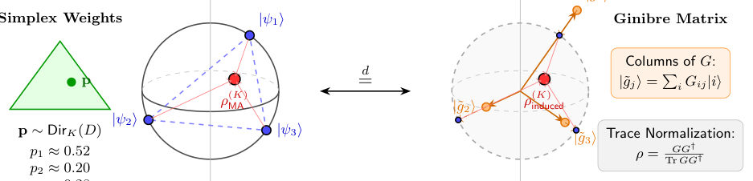
<figcaption class="paper-figure-caption"><b>Fig 1.</b> FIG. 1. Geometric illustration of the equivalence between the Mai-Alquier (MA) construction (left) and the induced-state construction (right) for a qubit system (D = 2) and environment dimension K = 3. Left: A mixed state is formed by convexly combining K independent Haar-random pure states |ψj⟩with weights p ∼DirK(D). Right: The columns |˜gj⟩of a 2 × 3 Ginibre matrix (plotted as orange circles) determine normalized directions |ψj⟩= |˜gj⟩/∥|˜gj⟩∥(plotted as blue circles) and radial weights through trace normalization of GG†. Under this decomposition, the normalized radial variables generate the same Dirichlet law for the mixture weights, yielding the same random density-matrix distribution.</figcaption>
</figure>
</div>
<p><strong>Summary.</strong> This paper proves a deep mathematical equivalence between random mixed quantum states generated by tracing out an environment and a statistical mixture called the Mai-Alquier distribution. This identification is highly valuable because it allows researchers to calculate complex quantum observables, such as purity moments and determinants, using simpler tools from the theory of Dirichlet distributions and Haar averages. It unifies the theoretical understanding of induced random mixed states.</p>
<p><strong>Why it may be interesting.</strong> This work provides a powerful mathematical tool to simplify calculations in open quantum systems by mapping physical environmental tracing processes onto well-understood statistical ensembles (Dirichlet mixtures).</p>
<details>
<summary>Detailed structure</summary>
<p><strong>Main problem.</strong> The paper establishes an exact equivalence between random mixed states induced by tracing out an environment and a specific statistical mixture known as the Mai-Alquier (MA) distribution.</p>
<p><strong>Main result.</strong> This equivalence allows complex calculations involving induced random mixed states (like purity moments and determinants) to be recast into manageable calculations involving Dirichlet moments and low-order Haar averages.</p>
<p><strong>Method.</strong> The authors use properties of the Ginibre ensemble and the Gamma distribution to show that the induced state distribution matches the Dirichlet-weighted mixture distribution when the Dirichlet parameter equals the system dimension.</p>
<p><strong>Model / system.</strong> The model involves a D-dimensional system coupled to a K-dimensional environment, prepared in a Haar-random pure global state, followed by tracing out the environment to yield the induced mixed state.</p>
<p><strong>Key observables.</strong> Purity moments ($  ext{Tr} 
ho^m$), mean Hilbert-Schmidt distance between ensembles, and the determinant ($\det 
ho$).</p>
<p><strong>Important parameters / regimes.</strong> D (system dimension), K (environment dimension), and the Dirichlet concentration parameter $\alpha$ (which must equal D for equivalence).</p>
<p><strong>Assumptions / limitations.</strong> The equivalence holds under the condition that the Dirichlet concentration parameter $\alpha$ matches the system dimension $D$.</p>
<p><strong>Figures summary.</strong> Figure 1 illustrates the geometric equivalence for a qubit system, showing both the MA construction (convex combination) and the induced state construction using Ginibre matrix columns leading to the same Dirichlet law.</p>
<p><strong>Paper structure.</strong> The paper first defines the induced state via partial traces over a random environment, then derives the statistical properties showing the equivalence to the MA distribution. It then applies this equivalence to derive exact formulas for key observables like purity moments, distance, and determinants.</p>
</details>
<details>
<summary>Abstract</summary>
<p>We establish an exact equivalence in distribution between $D$-dimensional random mixed states induced by partial traces over $K$-dimensional environments and the Mai-Alquier distribution, a mixture of $K$ independent Haar-random pure states weighted by a symmetric Dirichlet distribution. This identification recasts a class of expectation values for induced ensembles into calculations involving Dirichlet moments and low-order Haar averages on a single-system state space. As applications, we recover exact purity moments up to fourth order, derive the mean Hilbert--Schmidt distance between independent induced ensembles with possibly different environment dimensions, and obtain exact average determinants. These results provide a unified and constructive perspective on induced random mixed states and on the evaluation of quantities such as purity moments, overlaps, and determinants.</p>
</details>
<p><sub><a href="#top">↑ back to top</a></sub></p>

<p><a id="paper-2609.10227"></a></p>
<h3 id="italian-business-to-business-invoicing-data-a-network-analysis"><a href="http://arxiv.org/abs/2609.10227v1">Italian Business-to-Business Invoicing Data: A Network Analysis</a></h3>
<p><strong>Authors:</strong> Valerio Astuti, Daniele Piras<br>
<strong>Type:</strong> theory · <strong>Category:</strong> statistical mechanics · <strong>PDF:</strong> <a href="https://arxiv.org/pdf/2609.10227v1">https://arxiv.org/pdf/2609.10227v1</a><br>
<strong>Analysis basis:</strong> full PDF text, analyzed in chunks</p>
<div class="figure-strip-hint">↔ Scroll figures horizontally</div>
<div class="paper-figures-scroll">
<figure class="paper-figure-card">

<figcaption class="paper-figure-caption"><b>Fig 1.</b> Figure 1: Flows between categories in terms of aggregated gross transaction amount. Bars’ height represents the total gross transaction amount of invoices by type of entity. Our analysis will focus on the transactions where both the seller and buyer are firms of type B, the flow in darker blue.</figcaption>
</figure>
<figure class="paper-figure-card">
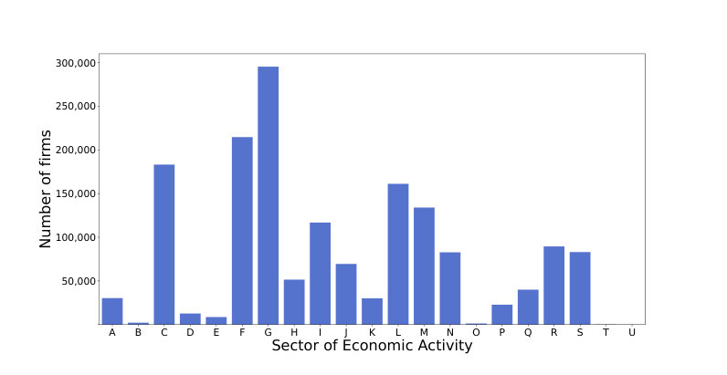
<figcaption class="paper-figure-caption"><b>Fig 2.</b> Figure 2: Number of firms per sector of economic activity. See Appendix F.1 for the full mapping between one-letter and 2-digit sectors. Sector U is the least represented, with fewer than 100 firms in the dataset.</figcaption>
</figure>
<figure class="paper-figure-card">
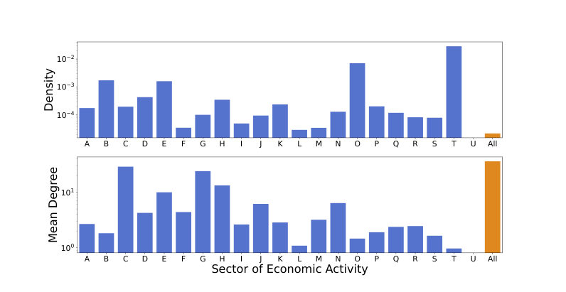
<figcaption class="paper-figure-caption"><b>Fig 3.</b> Figure 3: Density (upper plot) and mean degree (lower plot) of the networks of transactions within the same sector of economic activity, compared to the value for the whole network (re- ported in orange).</figcaption>
</figure>
<figure class="paper-figure-card">
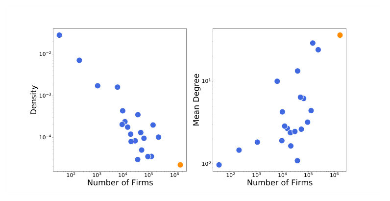
<figcaption class="paper-figure-caption"><b>Fig 4.</b> Figure 4: Plot of density (left hand side) and mean degree (right hand side) as a function of the number of nodes in the sub-networks of transactions within the same sector of economic activity.</figcaption>
</figure>
<figure class="paper-figure-card">
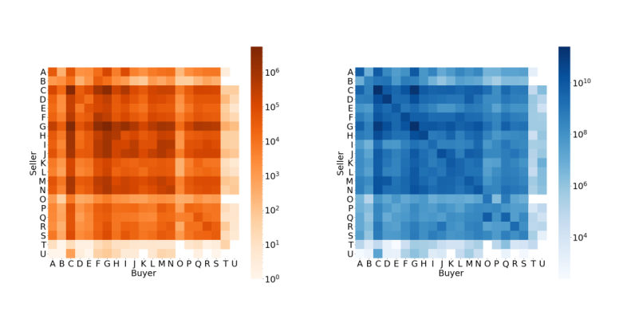
<figcaption class="paper-figure-caption"><b>Fig 5.</b> Figure 5: Distribution of number of connections (left hand side) and total gross amount of the invoices (right hand side) between sectors.</figcaption>
</figure>
</div>
<p><strong>Summary.</strong> This paper analyzes the structure of the Italian B2B commercial network using massive invoicing data, modeling firms as nodes and transactions as weighted edges. It finds the network possesses a scale-free structure and characterizes how economic importance (centrality) is unevenly distributed among a few key firms. The findings offer quantitative insights into the underlying connectivity and vulnerabilities of the national production system.</p>
<p><strong>Why it may be interesting.</strong> The application of complex network theory, which shares mathematical tools with statistical physics (e.g., power-law distributions, critical phenomena), to a real-world economic system provides a model for analyzing emergent collective behavior in non-physical systems.</p>
<details>
<summary>Detailed structure</summary>
<p><strong>Main problem.</strong> The paper characterizes the structure of the Italian production network using comprehensive firm-to-firm commercial transaction data to derive insights into the Italian economy.</p>
<p><strong>Main result.</strong> The network exhibits a scale-free structure, indicated by heavy-tailed distributions for buyer/seller counts and centrality measures. Furthermore, the tail exponents for buyer-side distributions are found to be lower than those for seller-side distributions.</p>
<p><strong>Method.</strong> Network analysis techniques are employed, treating firms as nodes and invoices as weighted, directed edges. Key metrics analyzed include degree distributions, network centrality (Eigenvector, Katz, PageRank), and structural properties like assortativity.</p>
<p><strong>Model / system.</strong> The system is the network of Italian Business-to-Business (B2B) commercial relationships, constructed from electronic invoicing data from the Italian Tax Office. Nodes are firms, and edges are weighted by the total monetary amount exchanged.</p>
<p><strong>Key observables.</strong> Distribution of buyers/sellers per firm, network centrality measures, tail exponents of degree distributions, network density, and mean degree.</p>
<p><strong>Important parameters / regimes.</strong> The analysis is based on the 2019 Italian electronic invoicing data, focusing on the B2B subset of transactions.</p>
<p><strong>Assumptions / limitations.</strong> The analysis is static, and while the data coverage is comprehensive, the comparison of network metrics across different international datasets is cautioned against due to potential methodological variations.</p>
<p><strong>Figures summary.</strong> Figures illustrate the flow of transactions between entity types, the number of firms per economic sector (NACE), and maps showing regional/sectoral variations in centrality measures. Tables compare network metrics across different countries.</p>
<p><strong>Paper structure.</strong> The paper establishes the economic importance of micro-structure, details the unique B2B dataset, analyzes fundamental network statistics (scale-free, small-world), and concludes with detailed sectoral and geographical breakdowns of centrality.</p>
</details>
<details>
<summary>Abstract</summary>
<p>We present a comprehensive description of the network of Italian Business-to-Business commercial relationships, based on the universe of electronic invoices collected by the Italian Tax Office. The firm-to-firm detail of the data is exploited to describe the distribution of the numbers of buyers (customers) and sellers (suppliers) per firm, the centrality of each firm in the production network, and the average distance between firms. We characterize for the first time the firm-to-firm network describing the Italian production system, and present its geographic and sectoral breakdown. The analysis reveals heavy tailed distributions for the numbers of buyers and sellers per firm, implying a scale-free structure of the network. The distributions of centrality values display heavy tails as well, indicating a strong concentration of importance in a relatively small number of firms. We estimate the tail exponents for all these distributions, finding in all cases lower exponents for downstream (buyer-side) distributions than for the upstream (seller-side) ones.</p>
</details>
<p><sub><a href="#top">↑ back to top</a></sub></p>
<hr>
<p>
<a href="index.html">← Index</a>
 · <a href="papers_05.html">← Previous</a> · <a href="papers_07.html">Next →</a>
</p>
<hr>

</body>
</html>
